魏则西怎么样了？
“莆田系”民营医院名单大揭秘（内附名录）
280 个回答
2016年4月12日
——————————————————————————
受魏叔叔之托写给未曾谋面却有牵挂的网友们。
再过两天7月20日就是魏则西离世100天。魏则西这个名字也会逐渐从大家的脑海中淡去。这近一百天并不平静，甚至对于某些人来讲是天翻地覆。这一百天里大家也不再能够收到纯净的来自则西亦或来自魏叔和蓉姨的消息，这一百天里真真假假的报道中惊愕、悲伤、宽慰、愤怒、麻木的情感起伏也只能独自体味。那么今天就跟大家讲讲这一百天中发生的事情吧。
2016年4月12日清晨，西西去世，次日清晨在咸阳市殡仪馆举行了葬礼，在场的皆是师友亲属亲近之人。再次回忆，只记得那日过得恍惚，石楠散发出灵魂的味道，还有魏叔一声声仰天长啸“儿子没啦！”葬礼之后，家中全是西西的影子，唯一能让叔叔阿姨想要走出家门的理由便是头七、三七、五七。五一的前两天，突然之间，则西在知乎上写的问题成了热门话题，自此开始，关注度井喷式增长！家里的电话手机全被打爆被迫关机；没多久记者开始上门堵截，叔叔阿姨只好回乡下躲避。则西在知乎上陈述事实的话语，被不同的利益集团用来达到自己的目的。一开始叔叔阿姨还不清楚话题有多火爆的时候，接受过几家甚至连名字都没记住的电话采访，可是有些媒体发布的内容却令叔叔阿姨感到无可奈何。好在，某些结果还算宽慰，魏则西，离世后还在影响着这个国家向好的方向发展。截止目前叔叔阿姨仍然不知道相关方的态度，之前新京报来家采访，发稿前也给叔叔阿姨过目，文章刚发布几个小时，就被删除，令人十分不解。以上的一切，虽然有困扰，但依然感谢媒体，让存在的问题得到世人的关注。
失独家庭，社会之痛。我相信三年后、五年后、亦或十年后，魏叔叔和阿姨一定能够接受这一切然后好好的生活下去，这也是西西弥留之际的愿望。然而此时此刻，面对他们二老低垂的眼角和从未断过的泪水，我依然说不出一句安慰，道不出一句劝解。
这个账号会一直被魏叔叔和阿姨保存。真的非常非常非常感谢所有帮助过我们的人，曾经共同向命运抗争过的素未蒙面的朋友，真挚的祝愿你们，一生安康。
"人生壹世，草木壹秋，天地外，惟己耳，降心猿，鎖意馬。心與身合，無敵於天下。此吾平生之所求也。——魏则西"
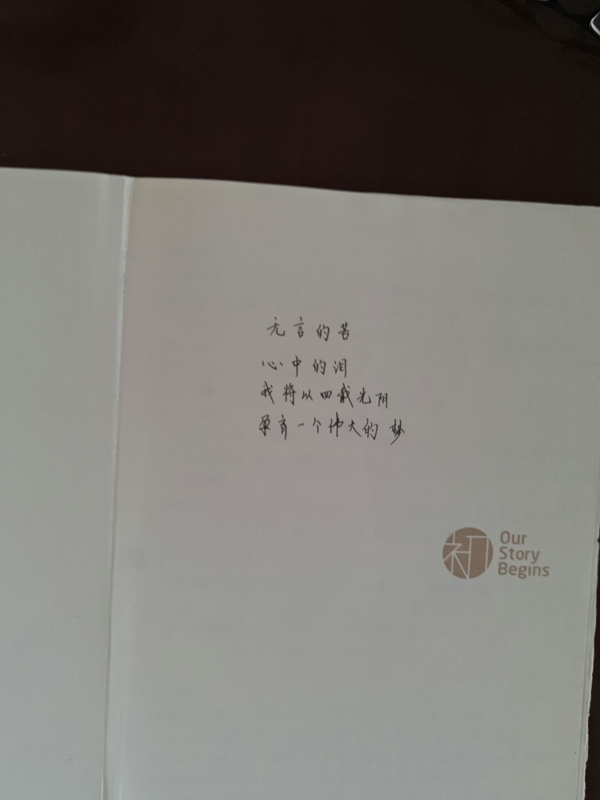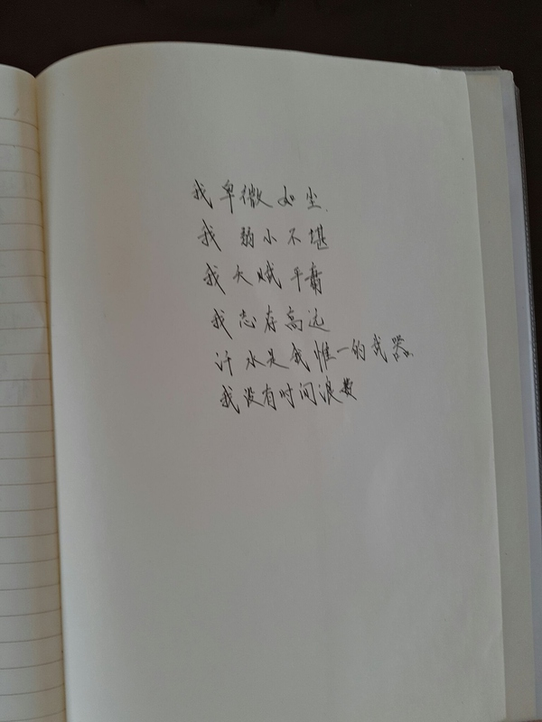
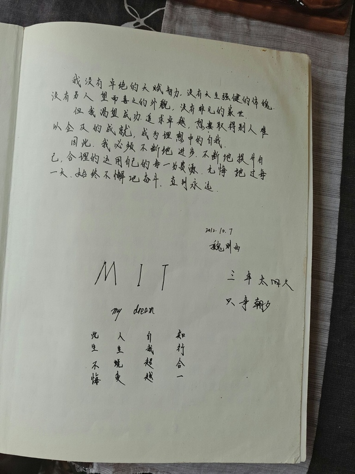
2016年7月17日
一朵花开灭了。
认识魏则西同学是去年的八月份，我在一个失眠的凌晨，看到他的提问：二十一岁癌症晚期，自杀是否是更好的选择？
看到同姓与同龄的男孩子，遭遇这样的厄运，挣扎在解脱与斗争之中，我内心里首先涌起的竟然是被命运怜悯的愧疚，然后是颤栗和敬佩，因为我完全不敢想象——如果我遇到了同样的困境，是会一蹶不振呢，还是能有他千万分之一的坚强呢。当时为了鼓励则西，我在答案末尾里说：
你若挺住，风雨有期；你若归去，我们所有的人都会记住你。
如果你愿意，我想你是喜欢文字的——你的问题描述如此之长却又能有条理纹路，句句戳中我心，你可以把你的零碎文字都发给我（在你父母的帮助下），我帮你将他们整理成文，装裱成书，印发给你的家人朋友们。
或者你有其他想做但暂时无法去做的事也可以告诉大家，我们一起帮你完成，或许，如果你坚持治疗的话，以后还能亲自去完成它们呢：P
于是和则西交换了微信和QQ。
他告诉我，他确实很喜欢写东西，虽然学了计算机，却依然热爱着中国历史；他说原本想花一些时间写写对历史的看法，可惜现在要治病——没准以后痊愈了可以写；他说他现在的文字只有说说和知乎，我有空的话，可以帮他把这些东西整理起来——如果以后有机会，他可以再写一些新的补充进去。
那时候恰好是暑假，我用了几个晚上，读完了他零碎的QQ空间。毫无疑问，这是一次有震撼力的阅读，是一个对未来有梦想，对生活有期待，对人生有规划的男孩子，在面临突如其来的挡路牌之后，最直接和本真的反应。
在这一刻，我突然觉得，虽然和则西素未谋面，彼此只言片语，却通过他文字的表达，仿佛陪着他经历了一次情绪的变化：从起初对命运的愤怒和无奈，到一遍遍的自我鼓舞和打气，再到对周围人施以援手的感激，同时，也有一个年轻人被接受帮助而略微羞赧的自尊心，以及对生活的咒骂和不屑，和被反弹而起无比强烈的求生欲望。
没有修饰，这就是他过去近两年的时间轴。
我按照时间的顺序，把则西留在网上的文字编排在一起，后来得到了二狗姑娘的帮助，又将它们付于排版，以供印刷。
当时以为他会有许多时间，写更多文字，那么可以按照时间轴的顺序，增补在后面，所以一直没有公开这本小册子。
当时也答应过他，如果……，会帮助他把这本小书，推荐给别人阅读。
今天在朋友圈看到他爸爸发布的消息：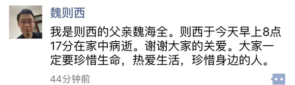
我真的不知道，该如何去悼念，一朵花的寂灭。
希望我们可以凭借这一点点痕迹，记住一个与我们生命产生了一些偶然交集的男孩子，他或许曾经启发了你对生命的看法，又或许让你重新认识了坚强，他或许过于普通，但对于他的家人和朋友们来说，将永远独一无二。
被记住，大概是对消失最好的慰藉吧——我是这样想的。
（序）
在你开始阅读这本书之前，我要向你介绍一下这些文字的主人——魏则西，或许你是他的父母、亲人、朋友、同学，也或者仅仅是素未相逢的网友、陌生人。他是西安电子科技大学计算机学院1303011班的学生，2014年4月24日被确诊为恶性滑膜肉瘤患者。
我在知乎认识则西，他提了一个触目惊心的问题：二十一岁癌症晚期，自杀是否是更好的选择？那天是8月14日的凌晨三点，短短几分钟内，已经有一百多个人关注和三十多个回答。
而我的想法，是希望能够帮助则西一起把他经历癌症两年以来的零碎文字编纂成书，以下内容来自他QQ空间里的一百六十多条说说和知乎主页，我通过时间轴的顺序把它们编排在一起，从2013年秋冬到2015年8月14日。所有的文字都保留了原有的写法和标点符号，然而心细的你会发现时间的单位从季度到了月份，又变成了天，而行间距从3倍变成了2倍，又变成了1倍。
开始阅读吧，我替则西说一句，很高兴认识你。
《魏则西的时间轴》下载地址： http://vdisk.weibo.com/s/zUmTEzs64Anxg
以下留言于2016/5/1：
因为我开了微博会员，所以这份文件不会丢失，下载链接也不会失效。至于公开这份小文件，是则西当时的心愿，并不是我的决定。
记住，是对逝去的最好悼念吧。
最近我很少上知乎，但也在朋友圈和微博看到了则西的新闻，说实在，我很难过——如果则西生前就能得到这些关注，那么或许他可以拥有更多的治疗机会，也或许，唉。
新浪微博的文件被莫名删除了，如果你想要看的话可以发我私信，并留下邮箱，我会隔一段时间统一发送。
写写我与则西短暂的交集。我是在则西写最后一个回答的那天注意到他，当天晚上立即联系到他的家人。则西癌转移的位置和当初我爸的位置有相似之处，我让跟我爸看了三年癌症的我妈与叔叔阿姨联系上，希望与他们交流治疗癌症的经验帮助他们一些。
但是我妈在了解了他的情况之后就告诉了我四个字，希望渺茫。我心里还抱着一线希望，觉得则西还年轻应该可以多撑一段时间，我在微信上安慰叔叔阿姨，说等以后则西情况稳定了我去看他们（我爸撑了三年）。之后我和叔叔阿姨失去了联系，发出去的消息再也没有回复。我这时候还在想可能则西这个阶段病情不太稳定他们不能分心，谁知今天竟然得到了这个噩耗。看着则西离开的消息我的眼泪瞬间流出，我真的不敢想象我的同龄人，正在大好年纪的鲜活生命，竟然就这么溘然长逝。
没有经历过癌症的家庭很难体会到癌症带给病人，带给家庭的巨大痛苦。则西从来没有放弃，我在之前他的回答里看到他写道他最放心不下的就是自己的父母，不能让父母老无所依。我想起有一次我爸看电视的时候正好看到一个女子轻生的桥段，我爸当时恨铁不成钢地说，为什么这些人不明白生命有多么珍贵。每一个得了癌症的人都会有无比强烈的求生欲望，都有着对未来无比强烈的希望和憧憬，哪怕身体上经历的痛苦再强烈，哪怕痊愈的希望再渺茫。但是癌症就是这样无情，就是要生生撕碎一个家庭对生活的全部指望，就是要把一个幸福美满的家庭打入无底的深渊。
我今天仿佛又走回了这痛苦的深渊，我看到一个与我同龄的年轻面孔就这么消失不见。则西，我是多么希望拥抱你饱受摧残的身体和灵魂，与你分享你心里难以表达的痛苦，无奈和遗憾。则西，虽然我们素未谋面，但是我今天依然希望以一个朋友的身份与你告别。
好兄弟，走好
我把这事和朋友说了，朋友发给我一首汉朝时期民间的丧歌，我贴在最后以表纪念。
薤上露，何易晞。
露晞明朝更复落，人死一去何时归。
鬼伯一何相催促？人命不得少踟蹰。
我一直是一个平凡或者说很平庸的人，每天庸庸碌碌的为了生存挣扎，没有什么爱好没有什么梦想，没心没肺无忧无虑，每天最大的烦恼是中午吃什么，活的像最标准的背景。
直到2012年的4月。原来中风的妈妈腹腔CT检查出胆囊有阴影，做了PET-CT后，确认是胆囊癌。我本就不是个坚强的人，强行镇定自己后巨大的精神压力很快反应到身体上，高烧，不明原因的过敏，人红肿的像猪头，无法入睡，也不觉得困。
5月做了胆囊癌根治术，做完手术的那个晚上，她高烧不退，我一个人陪着她感觉漫漫长夜永远天也不会亮了。后来看上去又好了，她又变的精神奕奕。
然后到13年4月，告诉我们她最多半年了，我们去了上海，又慢慢的减缓这个过程。直到今年3月1日她受完了所有的苦，离我而去。
我记得去年的最后一天，我推着她的轮椅，从一个医院飞奔到另外一个医院，怕医生不收，在手术室外面苦苦哀求；我记得她跟我说，我是不是要死了；我记得最后一次放PTCD管，医生对她说，老太太，希望能对你有点帮助；我记得在今年1月27日的半夜，一个人在车里嚎啕大哭；我记得她要走的前一个下午，我不停的跟她说，你走吧你放心的走，家里我会管的老爸我会管的你不要硬撑了...好多的事情，如今都化为灰烬了。
知道魏则西很偶然，有一次在知乎看到他说到实验组的事情，那时候我还抱着幻想，我还想去国外给她看病，就想去了解下这个事情，加了微信，问了以后他也没怎么说话。那时候她病的越来越重，也没顾得上了，后来用不着了，她住进了临终病房，而魏则西的微信也更新了他因为胸腔积液住进了医院。当时他在知乎上也回答了一次。后来他在知乎上再更新的时候，我妈已经离开我，而他的回答，我能看到他可能也没多少时间了，心里希望他能挺过去，也希望能战胜癌症这个魔鬼。直到今天下班打完卡，发现朋友圈的信息，当时正跟老总解决完一个很奇怪的事情，到了楼下发动车子就有点忍不住了。
我妈离开我以后，我还是和以前一样每天按部就班的，甚至更轻松了，因为没有一个重病人要我去照顾了，可是不管我做什么都没劲，感觉都没意思，以前喜欢吃，为了好吃的生煎能开几十公里排队去吃，现在吃不吃都随便了，本来就没什么爱好，现在更没有了。我尝试着努力去生活，买花，买新衣服，做个新发型，可是总感觉生活和我隔了一层。我像是站在上帝视角上冷冷的看自己演戏一样的人生。以前她还没有离开我的时候，我见不得癌这个字，看到任何人拿生病开玩笑特别反感，现在好像也没有感觉。好像把这件事深深的埋了起来，然后也埋葬了整个对生活的热情。
我没有给魏则西捐款，一来是自己也很穷，我们用了很多自费药，我又全职照顾我妈妈去了，也没有收入；二来这个钱真的没什么用，到了这一步了钱多钱少真的没什么区别，我想他想要的也不是捐款。
我也没有天天给他发信息，我只是个在网络上萍水相逢的陌生人，我只是默默的关注他，希望他能有个不同的好的结局，但是如同之前每一次的交手一样，癌症这个东西实在太强大，医学又实在太不发达。
我看了好多好多关于生死的书，也从各种的角度去开解我自己，但是总觉得逝者已经离去，活着的人要更好的活着这话特别的残忍。我都不舍得我妈一个人在屋子里，总要有人陪着才不会冷清。虽然再也不见面了，但是感觉就像我在客厅她在厨房，我去了厨房她在卧室一样，总感觉她没有离开我。
乱七八糟说了一堆，也不知道自己想说什么。就这样吧楼下小卖部的胖金哥生病了。前天他还坐在店里，叼着烟，一只眼睛瞅着电视，另一只眼睛懒洋洋地收钱。即使作为收银员，他的服务态度也未免差了些，我不怎么喜欢他。
可是今天他病了，淋巴癌晚期，最不乐观的病情。路过小卖部时我张望了一下，两个年轻人沉默地坐在里面，没有看电视也没有抽烟。
店还在营业，但胖金哥，可能就这样再也见不到了吧。我在他的铺面门口站了一会儿，转身走了。
————————————————————
4月12日到现在已经有段时间，还是想来说些什么，不为别的，就为。。。解郁吧。
得知则西去世时是4月12日上午11点，我咬着手指呆了几分钟，然后发微信给知乎上的一个朋友。我说：“你知道么？魏则西去世了。”，他回复我：“节哀。”
我确实挺哀的。但想了一想，我似乎并没有什么立场“节哀”，因为我真的谁也不是，我只是一个因为至亲曾经经历过全套，所以对癌症和死亡有些敏感路人。
然而我对则西是有感情的，虽然他从头到尾都没有理过我。后期，他的手机一直在父母手上，所以我很后悔，没能在他还好的时候和他本人说上句话。
他是我在知乎关注的第一个人，能认识他，要感谢《滚蛋吧肿瘤君》。普通人看《滚蛋吧，肿瘤君》与二十一岁癌症晚期患者看有什么不同的感受? - 心理学
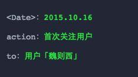
他不喜欢这个电影，觉得不真实。而我，当时正好下了这个电影，还没敢看。
11月2日是妈妈的忌日。每到入秋，我总是莫名其妙地情绪低落。也许是因为不想面对即将到来的寒冷与萧索，也许是因为脑中总浮现出2013年那些残酷的画面。可是2015年的秋天，这样糟糕的情况有了些许改变，我得到了情感的出口。
我如同发泄一般地写下那个答案，心中的黑暗与绝望喷涌而出。我收到了许多质疑，也得到了许多认可，很多人给我留言，倾诉着他们的血与泪。我找到了组织，得到了情感上的共鸣与安慰，我甚至因为这个回答交到了几个聊得来的朋友，而这都是因为则西的问题，我很感谢他。
还记得那时，我每天都收到很多赞、评论以及私信。我总是一条一条认真查看，希望其中有一条属于则西，可惜并没有，他始终没有理过我。那么，我就做一个默默点赞的脑残粉吧！我一边这样想着，一边翻遍了他所有的提问和回答。
他的文字里，尽是触目惊心的疼痛与挣扎。我不知道他究竟有多疼，但我深深地了解这种煎熬与无力。然而除此之外，我并无计可施。在巨大的灾难面前，所有语言都显得那么苍白，无论安慰还是祝福都仿佛杯水车薪一般无济于事。我经常在评论区删删打打，打打删删，但最终还是选择了什么也不说，默默点赞。3月24日，我看到则西回答了这个问题：“人濒临死亡时是怎么样的一种感受？”。这几千个字可以说惊心动魄，让人颤栗不已。我大约分了三次才看完，看看停停，停停想想。当我看到他说：“我只想知道一件事，我和我父母的出路到底有没有，我还能不能为他们养老送终？”的时候，我又不争气地想到了妈妈临终的场景。
当时肿瘤已经扩散到了她的大脑，她不太能说话，人也认不清，但她依然记得要雷打不动地按时吃药。
每天早晨，中午和晚上，她都用身体上唯一还能活动的一只手，努力地翻包找药让我们喂她。以她当时的病情，所有人都知道已无希望，吃药完全是心理安慰，但她依旧努力地吃药，因为她依旧想活啊！
癌症到底有多疼？是生吞活剥还是万蚁噬骨？他们忍受着那么巨大的痛苦，可他们依旧想活啊！！！我妈妈如此，则西也如此。
我不能去想那个场景，一想就彻骨寒冷，泪流满面，然而我又不能不想。为什么，这到底是为什么？不是说只要努力就会有回报的吗？不是说只要坚持就能胜利的吗？他们明明那么努力，那么坚定啊！！！
冷静下来以后，我决定捐款。其实我大概也知道，到了这个地步，钱早已无用。但我实在找不出什么比钱更有用的东西了。
我对他说：“谢谢你。”，魏妈妈很快回复了我，对我表示感谢，但并没有立刻收钱。大约过了小半天，这笔钱才显示已收。我想可能是征求了当事人的同意以后才收的吧，他的家人真的很认真负责。
从则西在知乎上的最后一句话推测，那段时间应该有不少人捐款，可惜上天显然很爱打我们的脸。后来的事实证明，钱确实没有再起什么积极的作用。则西的故事像一部短暂的剧本，就这样匆匆落下帷幕，魏爸爸和魏妈妈，可能以后也不会再上这个号了吧。不知道再过多久，知乎ER会慢慢淡忘，不知道再过多久，我会慢慢地淡忘。
这段时间，我在知乎上从一个小透明，发展成为了一个大透明。我关注争议话题，沉浸于毫无意义的消磨，几乎忘记了我来知乎原本只是为了好好写点字。
现在，我终于又记起了初心。则西，谢谢你。
——————————————————————
楼下小卖部的胖金哥生病了。前天他还坐在店里，叼着烟，一只眼睛瞅着电视，另一只眼睛懒洋洋地收钱。可是今天他病了，淋巴癌晚期。癌症，就像一个恐怖的接力，在人间一棒一棒地相传，永不停息。
今天你搂着家人吃着火锅唱着歌，明天就可能进医院被判死刑；上一秒你俩卿卿我我准备结婚，下一秒就可能履行承诺陪他到生命的终点。
你的命，你说了不算，医生说了也不算，谁说了都不算。存者且偷生，死者长已矣。珍惜生命，除此之外别无他法。
“若有来生，那时请给我一个健康的身体，回报今生的一切。若有天堂，愿无病痛的折磨，我在那里护佑着所爱我的人。若死后是永恒的寂灭，我也没有痛苦，希望我的存在，给所有爱我的人留下的是快乐，幸福与力量，而不是痛苦与哀愁。”——魏则西西安电子科技大学 2012 级计算机专业学生 同学因病医治无效，不幸于 2016 年 4 月 12 日 8 时 17 分在家中逝世，终年 22 岁。
谨此讣闻。
2016 年 4 月 12 日
其实执笔之前，却是思考了很久。
说出来大家也许会喷吧，我曾经在这样的“莆田系”医院网络部门工作过一段时间，对这样的内幕较为了解。
因此看到魏则西的逝去，心头涌上一种悲凉的感觉。
有一种“我不杀伯仁，伯仁却因我而死”的自责感。
那是我大学毕业后的第一份工作，是某医院的网络部。
我很珍惜这样的机会，满心想着在医院，这样的响当当的名字，好像有了保障。
和大多数刚刚走进社会的年轻人一样，我努力，也勤奋，对未来充满希望，满心欢喜的认为自己好好工作，就能转正，有三金，能不让家人操心。
可是事实呢？我面对杂七杂八的工作，面对领导分配下来的任务，我心头起了一丝奇异的不安：“这不是骗人吗？”
什么叫做“网络部只管先把病人引到医院，看病是医生的事情。”什么叫做“只管吓唬病人，让他意识到不看病的危害。”
相信大家自己或者身边的朋友会遇到的这样情况。
你鼻子发痒，不舒服，去耳鼻喉科看病。
医生会告诉你：你这样的征兆是鼻炎，如果你只是想自己买点药就走了，他就会告诉你鼻炎如果不及时治疗会引发一系列的症状，最后告诉你鼻炎会引起癌变。说的你心惊胆战，最后你花了几千甚至上万去治疗。
我不是说没有这个可能，有些人确实是因为得了癌症，最初只有一点点症状。
所以私立医院的医生就拿着这个可能性吓唬你，让你多多检查，花了杂七杂八的高昂的检查费和治疗费，最后还要让你感恩戴德：你看吧，你没得癌症，全是我的功劳。
------------------------
私立医院为什么会出现这样的情况呢？
因为医生是拿提成的。看一个病人，病号一共花多钱，医生都是有个百分百来拿钱，医生为了多多挣钱，自然忽悠病人，美其名曰：多个检查多个保障。
-------------------------
曾经我感觉医院是多么神圣而干净的一个地方啊，自从自己开始进入工作后，我彻底改观了。
有时候我甚至能理解医闹，有人花了一辈子的积蓄，最后全进了私立医生的腰包。
公立医院的医生连续工作十几个小时累成狗，拿的还是死工资，出了医疗事故还要被砍。
私立医院的医生有提成，工资高达上万，有假期能出国考察，朝九晚五上下班，医院一层好几个保安，他们会怕医闹？真是天大的笑话。
私立医院这一颗老鼠屎，真是毁了一锅汤。
医患关系如今如此紧张，和这些黑心的人脱不了干系。
我经常在想，十年二十年之后，会越来越少的人选择当公立医院的医生吧
到时候看病，更难。你感觉呢？
为什么会有这样的事情发生？
是医疗制度的缺失，是执法部门监管不力，是隐形的官官相护，是人心作祟。
后来我辞职了，我不厌其烦的告诉身边的人：“看病时候千万不要去私立医院。”
你不知道他们的和某位知名的外国学者的照片可能是p出来的，你也不会知道他们的个人简介大多是由编辑搜集资料撰写的，你更不会知道这个医生根本不知道医德为何物，他看见你，只是看见了钱袋子。
对于医生来说，在这个城市混的不好了，摇身一变，到另一个城市，再进一家莆田系医院，网络他的负面信息已经没有了，冠冕堂皇的成为XX主任医师，你又如何得知呢？
有人说网络是透明的，但是好像这样看起来，一点都不透明，总有人能花钱一手遮天的。
只是想告诉各位，不要轻信关于医疗方面的推广，不要混淆公立医院和私立医院，更不要生了病，丧失生活的勇气。
世界本来就是存在黑色和彩色的，但是心中的世界是自己的。
希望世间少些病痛，更希望中国能一步步把制度完善，希望不要再出现一个魏则西，一个家庭的毁灭，莫过于此。
最后，希望魏则西一路走好，天堂没有病痛。
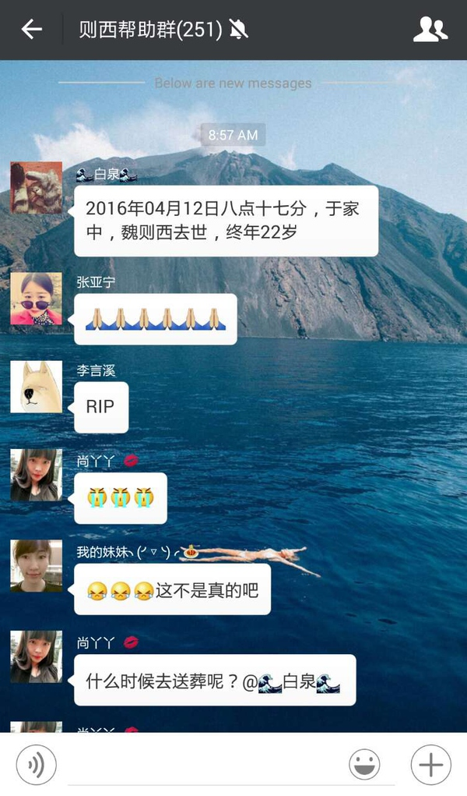
这是早上的微信信息···群里也有跟我一样难以置信的人。我看着这条消息愣了很久。
我在知乎知道魏则西，是看到他的问题“二十一岁癌症晚期，自杀是否是更好的选择？”，当时被内容所打动，所以加了他的微信，然后被他拉进了则西帮助群。进了则西帮助群之后，则西会经常在群里求助，会有很多人出来给出建议，给点帮助。
我能感受到则西想要求生的那种欲望，他是真的很不甘心，想要活下来···
每每想到这里，觉得心里就非常难受。为什么偏偏是他呢？
则西说，他的父母无论如何都不愿意放弃他，试想，哪个父母愿意放弃自己的亲生骨肉呢。不知道他们二老以后要用多长时间才能从痛苦中走出来，只希望则西的父母无病无忧。
这是则西母亲曾经跟我的一段对话，她的话，让我心都快碎了。
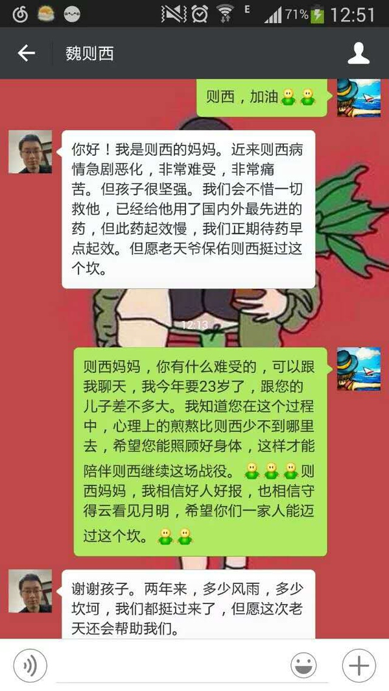
则西只有２２岁，但是却要经历这些。真的替他感到不甘心。
希望真的能有来生，愿他来生能实现自己所有的愿望，平安喜乐。
也感谢则西帮助群里的每一位小伙伴，在这个群里，感受到了许许多多的善意。
希望大家如则西爸爸所说：
大家一定要珍惜生命，热爱生活，珍惜身边的人。
则西，跟我男友一样的病。默默地关注你好久，你坚强地撑过一个个砍，都有给我们莫大希望，可惜你听不到谢谢了。我们会带着你的那份，跟滑膜肉瘤拼了。
一更：知乎经历多次诈骗，即使匿名仍然有那么多善良的知乎er，对大家的祝福无以为报，好好活下去当作报答。
这几天有不了解则西病情经历的人出来说反正都是晚期死人一个，感到异常愤懑，则西不要管那些坏人，在没有滑膜肉瘤的世界安心享受。我们跟则西一样，一开始并不是晚期！有治愈机会！并不是没救！没有百度的世界我们要证明会活的很好！
二更啦。
则西事件已经过去蛮久了，我都忘了这里，还是有人给我们加油。我们已经算是临床根治了，其中经历不忍再述。如今虽然人还是皮包骨，但是能吃能喝能睡，是不是就算云淡风轻了呢。然后慢慢地等待时间流逝到临床治愈(5年不复发)。真的好难！！！我会尽力更新到5年。
前面的医疗费用我们还可以勉强维持，真的谢谢你们提出过的帮助！口头安慰足够！谢谢~
真心感谢你们的转发或者爱心，即使一元，也在帮助他活下去。
发这个链接不知道合不合知乎的规矩，举报删除评论也可以的。求保留这个答案。
匿名是因为男友不想让公开啊…不想所有人都知道他是个病人，迷之自尊心╮(╯▽╰)╭如果对我身份存疑的话可以留言，我会私信你们的。
刚刚看到这个帖子的时候心里咯噔一下，你到底还是走了，空劳父母半生牵挂和满头白发，则西爸爸妈妈，您二位的痛苦我们没办法分担，恕我无能，不知道如何去安慰，但我相信这则西曾经来过的世界仍会给您们带来源源不绝的希望。
可难过归难过，过了今天大抵也就忘却了，半年之后，知乎上又会还有多少人记得则西呢。只生亦何欢，死亦何苦，包括我在内多少人每日汲汲营营、鸡毛蒜皮、乌烟瘴气、要东要西，反认他乡做故乡。
可叹在你离开的时刻，我正举着豆浆奔跑在大厦前的车水马龙中，只是为了在8:30前打上卡。
请关注则西的父母吧！
逝去的生命将悲痛和绝望带给了他的父母。过两天，我们还会正常生活，或许会慢慢忘掉这个年轻的生命。而他的父母将活在长久的悲痛与绝望中。
———————
今天朋友告诉我则西的消息，我不确定这位小兄弟是否为独生子女。不过他让我内心一紧，此时最痛苦绝望的莫过于父母。
我没法说出则西父母请“坚强”，“节哀”的这类话语，因为这太难了……比起则西，我更担忧其父母。
这些事情让我想起中国有这样一批绝望的群体——“失独家庭”.
————————
1.
今年在去上海工作的火车上，遇到一位同乡的母亲，她的女儿在上海一家银行工作，被查出在喉管与食道之间有恶性肿瘤，据说无法做手术。那位母亲几近崩溃，对我们说，“我要卖房给我女儿治病，她结婚不到两个月啊”，“她是我一辈子的寄托”，“我女儿要是走了，我把财产交给我姊妹，我也跟我女儿一起走。”……
后来我加了她微信，并告诉她在上海，需要我帮助请开口。那位母亲的微信朋友圈里，一直发的是关于“保佑”，“佛”，“祈福”推送。我不知如何劝慰这位母亲，这太难了。后来，哎……
2.「我活的太久了。」
这是我曾经看过一篇新闻的标题，一位失独母亲在红十字会办理自己的遗体捐赠手术时说的。
她说“我活得太久了，活着因为债还没有还清，不能就这么走了。”
截取新闻原稿中的一段:
八十年代的计划生育政策，是落在你我八零后、九零后身上的，也是落在她们五零六零的父母们身上的，我们还健康地为了柴米油盐车房股票上火的时候，这些家庭已经失去了自己唯一的孩子。
如果你还只是为人子女，或许你还不能那么深刻地体会到，一个孩子在传统的中国家庭中地位有多重要，毫不夸张地的说，对于许多父母而言，孩子就是他们后半辈子的全部希望。
然而，没有希望了。希望死了。
在跟这个群体接触的过程中，她们大都跟我说过同一句话，
『我活得太久了。』
哎，我不确定心酸究竟是什么含义。但我想它并不总是叫人哭泣，而是叫人长长地叹息，那一瞬间你真的相信，芸芸众生总有人过着一种默默绝望的生活。
愿诸位平平安安，健康一生。
百度的恶是最大的恶
百度控制着普通人接触信息时代的入口，却把路标指向邪恶欺骗的世界。它让人们对互联网世界失去信任、对技术失去尊重、在使用这个时代最先进的知识/信息获取方式时感到恐惧。加剧了信息占有乃至智识上的不平等。这种对弱势群体对普通大众的经年累月的作恶，是最深的恶。记念魏则西君
一
中华人民共和国六十七年四月二十七日，就是十二日魏则西君不治早逝后半个月，我独在知乎徘徊，看到此事已逐渐发酵，我莫名其妙的将魏则西君和刘和珍君联系起来。我自己想想，“我可曾为魏则西君之事提供过一点任何什么帮助没有？”“我还是尽力写点东西吧；魏则西生前在知乎上的文字我很爱看，但我的文字没有资格记念他。”“就拿来鲁迅先生的文字改编吧，都是记念。”“魏则西君与刘和珍君很像，我想先生亦不会怪罪我吧。”
这是我知道的，凡我所浏览的文字，大概是因为往往透出思考现实真相罢，一向就甚为不美好，然而在这样的不美好中，毅然回答了《人性最大的“恶”》《濒临死亡的感觉》如此最为讳莫如深问题的就有他。我也早觉得有写一点东西的必要了，这虽然于死者毫不相干，但在生者，却大抵只能如此而已。倘使我能够相信真有所谓“在天之灵”，那自然可以得到更大的安慰，——但是，现在，却只能如此而已。
可是我实在无话可说。我只觉得所住的并非人间。二十一岁青年生前无力挣扎的文字，洋溢在我的脑海，使我艰于呼吸视听，那里还能有什么言语？长歌当哭，是必须在痛定之后的。而此后几个所谓公知大V的阴险的论调，尤使我觉得悲哀。我已经出离愤怒了。我将深味这非人间的浓黑的悲凉；以我的最大哀痛显示于非人间，使它们快意于我的苦痛，就将这作为后死者的菲薄的祭品，奉献于逝者的灵前。
二
真的猛士，敢于直面惨淡的人生，敢于正视淋漓的鲜血。这是怎样的哀痛者和幸福者？然而造化又常常为庸人设计，以时间的流驶，来洗涤旧迹，仅使留下淡红的血色和微漠的悲哀。在这淡红的血色和微漠的悲哀中，又给人暂得偷生，维持着这似人非人的世界。我不知道这样的世界何时是一个尽头！
我们还在这样的世上活着；我也早觉得有写一点东西的必要了。
(先生原文，我竟不能改一字)
离四月十二日也已有两星期，忘却的救主快要降临了罢，我正有写一点东西的必要了。
三
在所有被赤脚医生诊所耽误祸害的病者之中，我都素未谋面，魏则西君是我唯一在网络透过文字所了解和赞同过的。知乎用户云者，我向来这样想，这样说，现在却觉得有些踌躇了，我应该对他奉献我的悲哀与尊敬。他不是“答疑解惑分享知识经验获取关注”的缈缈码字者，是为中国医疗现实的恶疾而提前英年早逝的中国身患恶疾青年。
他的姓名第一次为我所见，是在去年岁末，看到《癌症晚期是否自杀》之帖子，我只是愈加感受到生命的脆弱不堪罢了。但是我无能为力的唏嘘，安慰的话语也不知如何传达。直到后来，也许已经是一大堆男女武将对童瑶声讨后，有人质疑魏则西君的真实，才有人贴出着各种照片证实，说：这就是魏则西。其时我才能将姓名和实体联合起来，心中却暗自诧异。我平素想，能够不为病痛所屈，反抗命运、输入文字的青年，无论如何，总该是有些阴郁和愤恨的，但他却常常微笑着，态度很温和。待到两月前《人性最大的“恶”》中他揭露了一些毛骨悚然的真相，我想他心中有恨吧。他于《人濒临死亡是什么感受》中作答，我于字里行间已感觉到他已精疲力尽，他也还是始终微笑着，态度很温和，但当时看到那温和的笑容，我心中感到却是无限的悲伤。此后似乎就不再见过他的文字。待到后来，我知他已经离开人世。总之，在我的记忆上，那一次的文字就是永别了。
四
我在前几日感到这事件在传播中酝酿着…
………
然而他之前即证明是事实了，作证的便是她自己的经历。而且又证明着这不但是简单的病重不治，简直是丧心病狂，因为他为此多承担多少难以言表的痛苦和无谓中损耗了多少本已时日无多的生命？
但…………
但接着就有流言…………
先生说过：
惨象，已使我目不忍视了；流言，尤使我耳不忍闻。我还有什么话可说呢？我懂得衰亡民族之所以默无声息的缘由了。沉默呵，沉默呵！不在沉默中爆发，就在沉默中灭亡。
五
但是，我还有要说的话。
我没有亲见；听说，他，魏则西君，那时是欣然撕开这沾满鲜血的现实。自然，陈述现实说出真相而已，稍有人心者，谁也不会料到在魏则西君离开后，有这样的轩然大波。
始终微笑的和蔼的魏则西君确是死掉了，这是真的，有他自己为证；
……
但是明暗中暴露或依旧隐藏的主谋、从犯、帮凶、刽子手们却居然昂起头来，不知道个个脸上有着血污……。
六
先生说过这样的话，我一字不改全搬过来：
时间永是流驶，街市依旧太平，有限的几个生命，在中国是不算什么的，至多，不过供无恶意的闲人以饭后的谈资，或者给有恶意的闲人作“流言”的种子。至于此外的深的意义，我总觉得很寥寥，因为这实在不过是徒手的请愿。人类的血战前行的历史，正如煤的形成，当时用大量的木材，结果却只是一小块，但请愿是不在其中的，更何况是徒手。
然而既然有了血痕了，当然不觉要扩大。至少，也当浸渍了亲族；师友，爱人的心，纵使时光流驶，洗成绯红，也会在微漠的悲哀中永存微笑的和蔼的旧影。陶潜说过，“亲戚或余悲，他人亦已歌，死去何所道，托体同山阿。”倘能如此，这也就够了。
七
先生已经说过：我向来是不惮以最坏的恶意来推测中国人的。但这回却很有几点恐怕又会出于先生的意外。一是利益者竟会这样地无良凶残，一是流言家竟至如此之下劣，一是中国的知识青年临难竟能如是之从容。
先生所目睹中国青年的思想解放，是始于五四后的不断在灾难中觉醒的，虽然是少数，但看那干练坚决，百折不回的气概，曾经屡次为之感叹。然而近百年后，这一回在肮脏规则中互相救助和坚定呐喊，虽殒身不救的事实，则更足为中国青年的勇毅，虽遭利益蒙欺，压抑至数十年，而终于没有消亡的明证了。倘要寻求这一次逝去者对于将来的意义，意义就在此罢。
苟活者在淡红的血色中，会依稀看见微茫的希望；真的猛士，将更奋然而前行。
呜呼，我说不出话，但以此记念魏则西君！
五月二日。
====================================================================
后记：
我自己的文字没有资格评价他，但是鲁迅先生的文字又过于刺骨和还原真相了。我震惊于当前的现实的诡异，更震惊于鲁迅先生的文字在时隔九十年后直接拿来照搬竟然处处契合！………为了避免被以最大的恶意揣测，我只能把文中涉及一些我们获知和推测的不完全的真相部分全部省略号。
我仅以如此不伦不类的零碎拼凑的文字，纪念魏则西。虽然素未谋面，但我不会淡忘他。
已匿名。我愿世人都能更加美好地活着，珍惜健康的每一天，因为我见证了（虽然只是在网络中）一个勇敢的灵魂是怎样一步一步为了活下来而努力的。他没有成功，但是谁又能成功呢？ 我们不过是比他多在这个世间留存一万多天罢了。所以他的悲哀，又何尝不是我们所有人的悲哀呢？唯有更加善良、更加努力地活下去，才能不负比则西多停留的每一天，才能不负我们比则西幸运的命运馈赠。
还是用这句话来激励自己以及所有曾经被则西的勇敢求生的经历所感动的所有人：你所浪费的今天，是昨天死去的人奢望的明天;你所厌恶的现在，是未来的你回不去的曾经。莫叹命运无常、人生即逝，把握住今天，你就拥有一切。
则西，谢谢你曾经勇敢的活着，谢谢。
有的人25岁就死了，但75岁才埋葬
有的人25岁被埋葬，但却已经永恒
人生真是一条不可以后退，终点也已经注定的路，甚至无法知道哪一天灾难会降临，只有珍惜此刻，珍惜每一次的好与坏，因为有限，让一切不可以被永远的等待，让所有的一切变得需要去珍惜。
感谢则西分享给我们的勇敢，向你致以最高的敬意，愿天堂没有病痛我为什么那么喜欢鲁迅呢？我时时刻刻都希望他能像常春树一样活着，在我觉得世态炎凉的时候，能在我身边说两句话，什么都行，只要告诉我：你眼前的一切只是一种变态的乱象罢了。
五一节忙的不可开交，昨晚上好容易安静一会，看了会电视。那个新闻想必大家早就看到了，“儿子街头暴打老父亲，因父亲想再婚怕财产被分”，我特别欣慰的是在微博上倾向于指责儿子残忍的舆论，此时非常正确的转向了那些冷漠的路人。在几分钟的视频里，那几个在旁边探头探脑的壮汉简直是天底下最大的笑话，最大的讽刺！
有人拍着视频，有人走近“观赏”，有人指指点点摇头离开，如果这是一场民间蹩脚的舞台剧，群众做此反应不足为奇，可是眼前明明是大逆不道，令人发指的施暴现场！
和颐酒店你们以为是小两口吵架、地铁里性骚扰你们觉得这女的穿的太少，什么时候儿子家暴父亲，你们都觉得这无关痛痒了？很难想象如果那位父亲当场被殴打致死，那群人心里会怎么想，我估计肯定有几个，像期待别人跳楼一样，松了一口气：“你丫终于跳了，等老半天了”。
帮凶也是凶，教唆犯也是主犯，我们暂且可以在法不责众的庇佑下，围观得心安又理得，可是原谅我调侃一句：天道有轮回，苍天饶过谁？鲁迅先生说：“我很早就希望中国的站出来,对于中国的社会文明,都毫无忌惮地加以批评。”很可惜，我们在面对变态乱象时，那只懦弱卑劣的脚，总是会不自觉的向后退那么一小步。
几个月前，血友病吧被卖一事闹的沸沸扬扬，很多真相看了让人不寒而栗。福建莆田市委书记梁建勇曾公开指出，莆田系医院的客户来源主要就是百度，百度 2013年的广告总量是260亿元，莆田的民营医院在百度上就做了120亿元的广告。勾当、利益、黑色，变成了插在无数尸骨上的一面虚伪的旌旗。
鲁迅先生说：勇者愤怒，抽刃向更强者；怯者愤怒，却抽刃向更弱者。不可救药的民族中，一定有许多英雄，专向孩子们瞪眼。这些孱头们！孩子们在瞪眼中长大了， 又向别的孩子们瞪眼，并且想：他们一生都过在愤怒中。因为愤怒只是如此，所以他们要愤怒一生，——而且还要愤怒二世，三世，四世，以至末世。
不久前，我是一名网络上无所事事的游客，偶然翻到魏则西的那条回答。言语之间，看得出来他的乐观积极，也有一种与残酷现实的争夺的强烈求生欲。作为“游客”，我不过点了一个赞，被科普了一些关于滑膜肉瘤的健康知识，以及不要点百度广告的一个TIPs；关于魏则西，我没钱捐款，离他太远帮不了他，或者我还自私的想了一想：人终有一死。
现在新闻出来，魏则西走了，我又突然特别特别难受。不是矫情，也不是为他的故去伤心，而是觉得很久以前，不，几个月以前，他还是能发声的，他吃了一颗奥施康定，在这个世界上发出微弱却又撼人的声音。我们在事后也会讲话啊，大声疾呼、骂这骂那、指桑骂槐，可是为什么，我在此时此刻，会觉得世界应该沉默一点比较好。
“我将深味这非人间的浓黑的悲凉，以我的最大哀痛哀痛显示于非人间，使它们快意于我的苦痛，就将这作为后死者的菲薄的祭品，奉献于逝者的灵前。”这是《纪念刘和珍君》里面的一段话。
我们去呼喊也好，去坟前恸哭也罢，跳楼的终究是跳了，被拘留的儿子终究会释放出来，魏则西再也不能写着“感谢捐款”的文字在病房里过年了。
我将死了又死，以明白生之无穷。
——泰戈尔的《飞鸟集》
（写在个人公众号里的，直接搬过来了。）
学长走好。
我与学长素昧平生，却还是因为学长的离去而伤心难过。
现在西安这边是深夜了，不知道则西学长那边是白天还是黑夜？
今天清晨我还在上随机信号课，好难，刷着手机，惊闻学长去世的消息，看看吧，九点四十几，原来一个小时前，学长已经去世了，而这一个小时我虽然没有想着学长，但是学长在我脑子里的划分类是，活着。我真的难以描述自己当时的心情，就在一个小时前，你知道的一个人去世了是怎样的感受？其实我那会儿很难过，第二次觉得死亡如此近，第一次是奶奶去世。可是我不敢转发也不敢说，毕竟素昧平生说多了矫情。
所以只好深夜过来，悼念一下学长。
学长不知道听过这句话没：每个不曾起舞的日子，都是对生命的辜负。则西学长在生病时还在看书还在写文章，我是不是可以认为学长生命虽短，却从不曾辜负？
学长你在最绚烂的时候凋零，我心中千万想法只能汇成一句单薄的话语，学长走好。我不会时刻记得你，因为我也有我的生活，可是你总说存在我的记忆，为你开辟的存储空间一直都在，未来某些时刻我会想起你，会唏嘘。
学长走好。
学长走好。
学长走好。
学长走好。
学长走好。
如果有来生，希望则西学长健健康康，不再有病痛。
生命虽短，不曾辜负。加班加得头晕，突然看见这消息，眼泪顿时上涌。
虽然跟则西素不相识，只是以前见过他发的消息，觉得很惋惜，但是并没有往心里去。
到今日才细细的看，更加难受。
华丽的网站，是我做的，那些天花乱坠的专家介绍，是我编的，各种各样的荣誉证书，是我P的，那些热情的客服，是我挂的商桥，每日还要盯着后台，看预算，看关键词，看排名，三天两头的往里头充钱，偶尔还去百度培训下，经常跟同事吐槽，百度真尼玛贵，点击一下这么多钱。
深深的无力感，即使我不是做医疗的，只是个每月几千文工资的推广职员，但是依然给百度助纣为虐。
倘或早一点私信则西，告诉他这些多好......不匿，准备迎接鄙视的狂风暴雨。
-----------------------------------------------
5.3的分割线
则西的事情上腾讯首页了，这件事一定要出个结果，麻蛋------------------------------------------------------
5月7日的分割线
一波又一波的给百度洗地的。那些作恶的人，我在地府等着你们。
前天晚上已经托人找到了则西的灵魂，坐标是武警2院，给了他足以轰平整个医院的力量（家中4代巫师，宣扬迷信也好，折叠也好，爱咋咋的），则西，活着的时候我帮不上，现在我可以了，请你放心的复仇吧，百度不给你说法，我给你。
---------------------------------
5月7日下午的分割线
那边传来的消息，则西已经离开医院，进入轮回
在手机上看到你去世的消息，虽然很想哭，但没哭出来，紧接着就是一阵怅然，然后一阵释然，也许你再也不用受那么多罪了吧。你推荐的五百年来谁著史正在读。你看，一个人走过这世界，虽然短暂，但也影响了不少人，不是吗？
也许，生命不是一个宇宙的毁灭，而是一次重生呢。也许，来生你就成了歪果仁。也许是歪星仁。也许根本不在银行系了吧。也许都不是生物，而是个人工智能。我相信你已经关注问题“人濒死是什么感受”，那些回答似乎在证明这个世界不是完全唯物主义的。
曾经读历史，读小说，读到某个人多么传奇，多么悲壮，多么牛逼。总感觉心潮澎湃，大有一种“大丈夫当如斯“的赶脚，但肾上腺素褪去后，我还是平庸而碌碌无为的我。曾经看球赛，看电影，看到刀光剑影，科幻场面，顿时有一种代入感，但合上电脑，还是这个平凡世界，没有超能力，没有武功。当听到你去世的消息，虽然落寞，也曾叹息，但我还是会过着我庸俗的生活，吃着地沟油，吸着汽车尾气，受着电脑辐射，突然发现这一切好幸福，我将继续我苟且的日子，而你将在云端欣赏明天的朝阳，别了。
写给魏则西和他的父母
我母亲13年前得了直肠癌，在我们三线城市的公立医院几乎判了死刑，需要把肛门切除终身背屎袋。信息落后的农村，没有人脉，小学文化的父母，一愁莫展。我母亲不想这样度过下半生，这时我14岁，父母亲同年50岁左右，还有一个在广州读中专的姐姐18岁左右。爱好读书的我四处为妈妈想办法。某天，我看到某报纸上的一个广告写着有美国先进技术不用开刀微创腹腔镜可以治疗好各种癌症，当然还不用切掉肛门。各种成功例子在上面，非常显眼，非常吸引。年幼无知，辨别是非能力弱，强烈希望治好我妈的病的我信了。该医院名字叫广州复大肿瘤医院。
我给妈妈看了，他们都信了。在广州的姐姐担起带妈妈看病的职责，四处寻找终于来到报纸上面写的医院地址。那个年代没有什么网络，没有什么维权的意识，懵懵懂懂，为了生存，为了生活的质量，很多人都相信了，在医院里有非常多的患者都是通过报纸广告前来治疗的！
治疗了好几个月后回到家里，我才知道根本没治好，而且还留了一个大孔，这个孔是直通妈妈的直肠，本来医生说这个是要放一条导管导那些废物吧，但一直没搞干净一直都有，知道我母亲终于受不了这样的无效果又贵的治疗选择出院。这个孔一直陪伴到我母亲死，这个孔期间一直有粪便流出来，肉腐烂发臭，我母亲疼痛难忍。她经常跟我说她除了病灶很痛，其实还有这个孔非常痛，她承受不是一般癌症的痛。然后这个医院治不好，我们又四处寻医来到市公立医院治疗，但由于这个复大医院已经搞了这么一个烂摊子，没有一个医院可以把这个孔堵上。也因为耽误了病情，肿瘤恶化，在后面其他医院一直化疗，放疗都没有效果，最后经历了大概两三年的痛苦才撒手人寰。
我很记得我的母亲死的时候一点也不安详，因为她是痛死的，瞪着眼睛，手指着前面，腿卷着。卧病很长时间，每天都非常疼痛，瘦到大概只有70斤。直到某天下午她不小心从床上掉下来正好摔到肿瘤，然后大出血，失血过多死亡。
17岁我失去了我亲爱的母亲，我觉得自己也有责任，因为误信了报纸广告。现在读完大学再工作了这么多年，社会信息也这么开放，才知道当年宣传得这么夸大的美国技术其实只是腹腔镜微创手术，对于一些小手术还可以，比如阑尾炎，但大的肿瘤根本就不适用，完全切不干净的。一个这样的技术可以在广告放大这么多倍被宣传，我甚至怀疑当年的医生都不知道是不是莆田系类农民出身，根本不知道有没有医生资格。
而且这个医院叫复大肿瘤医院，多少人会以为是上海复旦大学的附属肿瘤医院，听着就高大上，以为技术过人。中国存在很多这样的误导，比如曹清华胶囊跟清华大学并没有关系，中大职业培训也不是中山大学开办的，韩束化妆品不是韩国的，韩国瓷肌也只是因为在韩国上市，为了迎合而想尽办法拉关系。多少这样的案例，忽悠了绝大部分没有去深究的人。他们宣传的成功都是因为他们抓住大部分消费者对一些著名品牌的心理认同感。我跟一个本科学历的朋友提起这个复大医院，她的第一反应也是复旦大学附属的肿瘤医院啊，应该还不错啊！所以这个心理印象其实真的跟多少学历文化无关，考的只是你有没有深入调查。如今魏则西也没有调查到，更何况在当年信息不发达的时候，调查这个医院靠不靠谱，真不真实何其困难！
魏则西是个大学生，觉知也很强，他呼吁其他人要认清事实，而我却迷迷糊糊地过去11年了没有追究过这个医院，也忘记了当初看到的报纸叫什么名字。他让我觉得我们这些曾经受害过的群体应该要站出来，写一下我的经历，让大家知道有这么一回事，大家要唤起这么一种意识————社会的弱势群体没有人脉没有钱没有知识，获得的保障真的少之又少，再加上媒体的失实报道真的会害死人的。希望国家立法监督媒体，还有希望更多人关注社会的弱势群体。
今天你没有遭遇到这个事情，你觉得可能只是有点惋惜，或者真正遇上的时候你可能觉得自己很多人脉可以帮助你求医，但我告诉你在这个大环境不好的情况下，万一你也栽倒了，你也会变成弱势群体，亲人的离开，你才会真真切切地感受到怎么样一种打击，一个家庭如何从幸福快乐走向四分五裂，走向忧郁。我爸六十多岁了，总会一个人坐着坐着就哭了。我跟我姐这么多年了自己也成家有孩子了，但其实心里还有个永远都不会消失的阴影。
所以前几天看到朋友圈有些还在百度上班的同事说什么即使没有百度，魏则西也不一定病会好啊，可能也会怎么样怎么样。我想说身为公司的员工有企业责任感是对的，但没有真正明白这个事情的本质就出来说话就怎么也是会让人气愤的。这个时候他还觉得自己很光荣，在面对这样的价值观问题，不是因为他是你爹你就要包庇，哪天害到的是你，看你怎么说。这个问题反映的不仅仅是百度，其实是更多的媒体，更多的企业，有没有业界良心。
这是唯一的一次评论，觉得对于他来说语言上的安慰太苍白无力，平时干脆不回复也免得会占那些真的帮得上他的人的楼。
今上午八点多，我打开知乎，犹豫半响第一次对他私信，发出这一句——则西，你还好吗。晚上，看到他父亲的回答，则西已经不在了。早上八点十七分离开的。
为什么上午我会突然有那么强烈的感受？
为什么？
有人说，半年以后还会不会有人记得他？ 我啊 ！我会记得的。
———————5.02更新———————
现在各大媒体都在讨论关注则西，可为什么就那么不是滋味？
从微博看到这个消息，得知魏则西同学已经去世，我一奔三的男人真是泪崩了，我崩的是为什么百度一而再再而三纵容医疗行业竞价排名？是，为了利益，为了赚更多的钱为了几千名百度员工的工资开销，还有名利。魏则西只是很多人的一个缩影，像这样普通家庭的人现在通过百度搜索病情的人太多太多，进了这种不正规的医院，听了医生所谓牛逼的技术，有了活下去的希望！李彦宏亦或者是那些黑心医院的员工们，想象一下，他们的生命寄托给你们的时候，那种又有活下去动力的表情！你们他妈的真的安心吗？我知道很多人可能还会说是有多蠢才会去通过百度搜索病情，换做是你！当一件本看不到希望的事情突然又给了你另一个希望，你怎么想？难道不想试试嘛？何况生死攸关！父母的爱真的是特别的伟大！魏则西小弟希望你在天堂会没有烦恼！可以每天都开开心心的！怪只能怪上帝打不过你，开了外挂了。
不恶意诅咒百度所有员工
却深深的鄙视这个链条最终的受益者
确实，我是个low'B
能做的只是在知乎诅咒一下你们
你们却还可以过着上层社会的日子
不过 话说回来，恶有恶报 不是不报时候未到愣了好久才哭出来，之前加了你的微信，
一直关注着，希望能有转机。
但是也有知乎上学医的朋友告诉我这个病国内几乎没有治疗的方法，就是时间问题，尽管不愿意相信，但是事实就是这样。。
作为西安人，同在西安求学，同样年轻。
当时看到你的事就觉得特别心酸，感觉就跟在身边的学长一样。希望能尽绵薄之力，希望能看到你恢复健康，读完大学，工作，恋爱，结婚，充实又忙碌的生活。。
然而现实无奈又残忍，
关注你的人一直牵挂着，
却等来了这个消息。。
只希望则西哥哥你的父母能够坚强，
天堂再无病痛，愿父母能带着你的心愿勇敢的生活下去。
作为一个同龄青年看到如此事件深感惋惜，看了则西视频、搜了关于他的一切，不禁泪涌眼眶。
百度唯利是图的确该骂，但我更想强调的是国家的责任，为什么中国发展到如今还有那么多丑恶的东西，还有那么多令人失望的现象，让我痛心，此事件暴露了国家对医药行业监管完全不到位(其他行业我想更是存在许多见不得光的丑恶现象吧)，百度仅仅只是一个小帮凶而已，为什么莆田系医院能在中国这样的环境混得如鱼得水，能够为非作歹，还不都是国家体制不健康，社会风气使然，中国共产党的丑恶想必大家都心知肚明，真的是失望。
让人欣慰的是社会中还有那么多有良知的同行人，愿则西在天堂安好！之前一直没关注过。如今这件事已经受到广泛关注。
突然间感觉生命真的很脆弱。再大的梦想，再多的财富，也挡不了上帝的恶爪。人生在世，对什么上心，都不如对自己的身体上心。
我姑父大年初二去世的。从查出胰腺癌到去世，只有1个月。一切来的太快，人生匆匆，不过白驹过隙。一路走好。
2016-05-02 王五四 振兴会
这届病人不行，多疑敏感，对医院不信任，对医生不信任，对社会不信任，这届病人又很可怜，生病了没办法，不得不去医院，然后托人找各种关系用各种手段增强安全系数，早知今日何必当初，当初考个公务员，为人民服务几年做个处级干部，享受良好的医疗服务就是个简单的小事了。
对于医院而言，这届病人特别麻烦，如弱柳扶风，动不动就要死要活，要活还好说，要死了就不值钱了，当然，这个不值钱是对于医疗行业而言，对于殡葬行业来讲，是多了一个用户，还是值钱的。虽然这届病人不行，但是这届病人值钱，人都惜命，病了的人都舍得花钱，就像中国病人魏则西，治病花了几十万，最后病没治好人死了，不过中国医疗界及相关行业会记住他的名字以及他作出的贡献，医院各大股东、医院各级领导、医院各科室医生、医导医托、百度公司、删帖公司、广告公司，共同分享了魏则西那几十万块钱。
其实魏则西在这届病人里算是好的，这届病人不行主要不行在那些得了病又没钱到医院去治疗的人，他们拖了中国病人的后腿，拉低了中国病人的估值。在一家生物细胞技术公司的融资计划里它是这样预测收入的：“一次CIK治疗收费为1.5万，毛利润为40%。如果与十家三甲医院合作，每家首年治疗200人，每人接受三个疗程，一年毛利润1512万元。”，作为一名生鲜食材行业的互联网创业者，我每天都在算客单价，每天都在想如何提升用户的消费频次，但是真的没想到，在另外一个领域，也有人这么算，他们已经计划好了我们该生几次病，每次治病该花多少钱，我一个很了解莆田系医院的医生朋友说，“只要你进医院了，就不会告诉你没病让你出来，你什么问题都没有，也会被忽悠做腹腔镜，在全麻状态下往你肚皮上打三个洞，然后手术就完了，收费45000……”
这种事的真实性已经没有什么好去质疑的了，打假人王海接受采访时曾说过他们打假莆田系医院的事，“我们在打一种假药，那种药在药店里买不到，不零售，只在一些医院有卖，必须在那儿就诊才给开。我们就安排人去就诊，大概派了五六个，结果都有病，性病、淋病、尿道炎什么的。我们很害怕，马上找了好几家公立医院去复诊，都没问题。”，“他们的方法很简单：通过广告，把消费者忽悠过来，忽悠来以后，他把没病的看成有病，有病的过度治疗。他们还做假的微创手术，就是在皮肤上拉一个口，因为本来没病，实际上也没做手术。”，第一次看到这些信息时我也震惊了，这些人居然能做出这种事，后来我的情绪马上稳定了，莆田系医院只是把不拿你们当人这种事细分了，做得更垂直更专业了，放眼望去，各个领域哪个角落里不在上演“不拿你当人”这种戏码。
各处都不拿你当人看这话还真是一点也不过，回头细想一下案例比比皆是，只不过医疗这个领域对于每个人来讲都是性命攸关的，大家才会这么一致的义愤填膺，在其他领域遇到非人待遇时，只要死亡不在眼前，你们都表现得很好，情绪稳定落落大方，这次你们的情绪不再稳定，面对百度你们慷慨激昂，我也讨厌百度这个公司，但实在觉得这次你们有点没劲了，老朝百度嚷嚷有什么用，他们根本不甩你，你也别问我干什么有用，有用的你也不敢干不愿干。越来越多的事最后都变成了情绪的狂欢，这种狂欢是建立在绝望和无解的基础上，大家既不是真的想去解决发生的问题，同时也不觉得这个问题会被解决，于是选择借题发挥，选择暗度陈仓，于是就有了情绪的狂欢，就像感觉寻找爱情太难，反而不如去享受短暂的私欲，在这届病人身上，能赚钱的选择了赚钱，不能赚钱的选择了发泄。
在这事上百度当然不是无辜的，虽然他一再强调推广对象的“资质齐全”这事，但你拿了人的钱，你不是路边的电线杆，电线杆不需要为电线杆上老军医的小广告负责，但百度是需要的。很多人认为百度只是提供搜索功能的网站，不是打假公司，也不是政府监管部门，“它没有能力也没有责任识别出自己的广告商哪些是骗子和不良商家，从而把它们拒之门外。”，在任何领域，骗子都是靠信息不对称来完成骗局的，而百度的某些商业行为加剧了这种信息不对称，不论是通过竞价排名优先露出某些信息，还是有意屏蔽某些负面信息，百度的责任很明显。
有报道称，“百度2013年的广告总量是260亿元，莆田的民营医院在百度上就做了120亿元的广告，它们广告投入的60%投给了搜索引擎，有医院在搜索引擎上的推广费用占到营业额的70%、80%，有医院一年收入1.2亿元，有1亿元投给了搜索引擎。”，假如说这些年莆田系医院割下来的包皮可以绕地球三圈，那么其中百度给带来的包皮可以绕百度大楼三十圈了。毫无疑问，莆田系医院在百度搜索引擎上投入的每一分广告费，都要从这届病人身上成倍的赚回来。一个医院一旦以赚钱为首要目的，医生身上都背了数额不小的营收指标，那么去医院看病的这届病人要承受的不仅仅是经济上的损失，更要承担生命安全风险。
莆田系医院这么多年来积累了巨额资本，也逐步开始把自己洗白，合法性也早就不是问题，他们甚至开始打造三甲医院甚至更高端的医院，他们也提到了要“回报社会”，他们从这届病人身上赚到了钱，开始光鲜亮丽走到台前，他们可以展望未来，但我们不能忘掉过去：不负责任的权力，唯利是图的企业，以及被榨干的这届中国病人。这届中国病人不贱，还挺值钱。
阅读 103017投诉
大家可能会问我为什么这么傻被骗，他们是分次行骗，先给你说2000元做个小手术。你入坑后下次复查就会说又要做一个手术，要4000，你要是不做就会感觉之前做的手术打了水漂。如此反复，一万块就搭进去了，病也没治好。后来觉得不对劲，网上查发现他们科室被承包出去了。简直是无耻至极，如果我不是出于对解放军的信任是不会花这么多钱的，莆田系要整治，但是部队更需要整治！
回头一次Update：
最好的祭奠就是追究责任到底！确保不再发生！而不是像汶川地震完了只会点蜡烛一样哭哭啼啼地闭着眼！
………………
为什么高票回答里只有人做无用的默哀，而没有人追究百度的责任？这百度的公关不得不服啊。所谓人命关天的事就被你们给“默哀”成不了了之了。
呵呵，跟我谈“一路走好”和“愿天堂没有病痛”？
真是恨得老子咬紧了牙。
愿这世界能少点欺骗，多点真实。
近几年，百度的声誉每况愈下已是众人皆知的事实了，可是我们却依然无法摆脱它对我们的影响，因为作为互联网最基础的入口，我们始终需要搜索答案，而这也意味着我们把自己的信任托付给了百度这类搜索引擎。
可是百度在不断拓展版图，增强商业化，牟取最大化利益的时候，却没能意识到自身所肩负的越来越重的责任，这不仅仅是企业对于国家创造经济价值的责任，更多的是对于整个大社会的责任，而这点也成为了百度日益增大的漏洞，被众人诟病却只是敷衍，没有从深层次的去认识改正，捅出篓子也就是必然的了。
互联网带来的是便利，是加速的生活化，可在加速生长中，监管制度的缓慢无疑是其中最大的缺陷，类似近两年的P2P，医疗，某宝假货，我们在寻找着答案的同时，解决自身需求的同时，也在被越来越多的欺骗影响着，尤其是金融，医疗这类关乎社会和生命的领域。
魏则西同学的事件，绝不是第一个，只是他借助了互联网的方式，用自己最后的生命，将那些隐藏在黑暗之下的邪恶拉了出来，曝光在了社会的目光下。
在看资料的时候，发现莆田系医院资质健全，可是正是这类号称有资格行医的医院，却成为了欺骗生命的“屠宰场”，为了利益，为了赚钱，将明明已经证实无效的疗法去包装成高端技术，去蒙骗着本身已经很可怜的病人，这TM就是一种良心的缺失啊。
病人是为了能恢复健康，抱着最后一根救命稻草的期待去寻求帮助，如果没有能力，那不如诚实点的告知病人，放他一条生路，可以尽早去觅得良医，延缓生命。
这是一场百度和医疗监管缺失所共同造成的黑幕，只希望未来能少点欺骗魏则西是咸阳人 高中就读于咸阳四中 在这之前我从未听说过他 我们都是无忧无虑的学生 记得四中对面的奶茶店里的抹茶甜筒很好吃 暑假的时候我总是为了它坐四站路去买 还有四中旁边的书豪文具里总有最好看的中性笔笔记本 我们一周总要去那么几次 只买不用 自欺欺人我是好学生 还有附近的大白兔 现在改名叫品度 夏天傍晚总有两种果酱的红豆冰山 每周末就会顺着咸阳湖散步过去 买好一周的面包和果酱 那时候还有欢欢 在路上我总要拿着一根树枝随时准备劝架 欢欢每次出门都要打架 总是和棕色的泰迪 她可能不喜欢卷毛儿的 路上还有拉菲宠物的新店 她总是拉肚子要去打针所以每次经过都紧张的伸着舌头使劲跑过去 我拉着她画面一定很可笑 可转眼间 欢欢也死了一年多了 再没有一只那么聪明的小花狗可以和我去湖边散步 我家门口常常备着的树枝也没用了 我想当时魏则西也应该是放学后去买一只甜筒 也许他也喜欢抹茶味 和同学边聊天边等公交 夏天会去咸阳湖看小狗打架大爷们拉二胡 生活笃实幸福 我们都好像有许多种未来 魏则西生活规律健康 为什么会突然得癌症 命运作弄 病情恶化 照片触目惊心 那个时候的他知乎提问二十一岁癌症患者应不应该自杀 现在翻到自己一年前的回答 幼稚地留言说要相信医生相信自己 一切都会好起来的 可现在他再也不能去排队买甜筒 晚上不能坐在湖边惬意地吹吹风 没有机会和同学去讨论他最喜欢的历史和数学
想想看啊 我们现在喜欢的 憎恶的 爱上的 渴望的 有可能会瞬间消失 嘴上念叨要追的演唱会 要去的同学会 要买给妈妈的生日礼物 要去的地方要见的人 都来不及去做甚至来不及反应就会失去机会 所有一切生活中琐碎的幸福的小事情在死亡面前不堪一击 我们会随时失去我们的爱 曾经我理所当然地以为欢欢会活很久 还担心过我以后去外地上学见不到她怎么办 还老念叨欢欢啊你以后要像只正常的狗一样陪妈妈粗去玩 慢慢变得像个姑娘不要到处打架 然而她在小区的花园一米深的地方已经很久 除夕夜放鞭炮她一个狗一定怕但再也不能躲到妈妈背后把自己塞进沙发里 欢欢想到这些了吗 一定不会 则西也从未想过这样的人生吧 可是我们对这些无能为力 一点点办法都没有 而可怕的是我们会选择性遗忘 欢欢死掉的时候我以为我再也开心不起来了 现在深夜郁闷的我过几周甚至会忘记自己为什么大晚上打这么多字 魏则西事件过后也会被更新鲜更大的新闻取代 则西父母也会慢慢恢复正常生活 每天每天心里不管多痛可生活还会继续 这是生命可怕的地方 或许也是意义所在 人生苦短 珍惜每一刻的空气阳光 珍惜身边的人 要小心又尽情地生活 我们还年轻 我们不会永远年轻 我们现在活着 我们不会永远活着 不愧对这一秒的呼吸和下一秒的记忆 愿我们都会活得尽兴精彩 像魏爸爸最后说的 我们一定要珍惜生命 热爱生活
特别懊恼觉得没能帮上你更多什么，总觉得你还在。你离开的第一天，我以为我会哭，然而没有，我特别平静。只是心里突然间坠了点什么。再往后，越来越难过。看见和你妈妈的对话，无力又懊悔，也许那个时候再做多一点会更好吧。
今天又想起你，尽管你我素昧平生，我却如此的悲伤，希望你来生安稳。则西，再见。唉, 当时刚关注则西不久知乎上有一个人发我信息, 问我要不要向则西捐款, 我谨慎的问了他相关信息, 他就没有回复了. 不久再看他的账号已经被知乎封了.
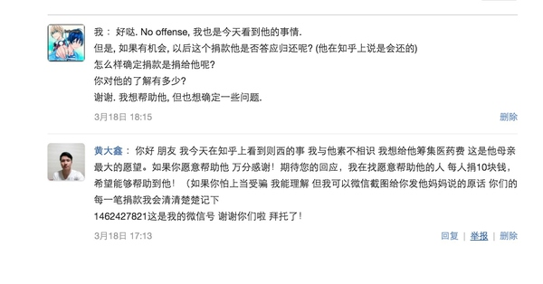
则西是我看到过的在困境最坚强真实的人.
大多数人在患重病, 就有样学样的呼吁别人捐款, 甚至家里还有房子可住, 有车子可开的时候, 就说已经花光所有的钱, 更重要的是, 通篇只有感恩, 而没有说以后有机会痊愈, 有能力赚钱后, 尽力一点点的还. 虽然还不还对于捐款的人来说并不重要, 但我认为这是一个非常重要的态度问题.
就连则西最后的一个回答,
我现在已经不奢求任何知友的经济帮助了
渣渣一个人就给了我两万，他和我素未谋面，这已经超过了我绝大多数亲戚所给予的了
人，不能贪得无厌，我在这里写下渣渣的捐款，是因为这是义卖，我必须为他正名，如果药物不起效，以后恐怕就没有机会了
都惦记着有没有机会"报恩".
后来我情况越来越好，以为自己彻底好了，开始准备今年九月份回学校上学，编译原理，数据库，Android开发，买了一大堆专业书，准备好好学习，成为大牛，争取毕业之后几年就可以把之前看病知友给的捐款还上，反正支付宝和微信里账单一直都在
当时想的特别好，回学校一边做开发一边学，如果到时候能去微软，谷歌，BAT之类的公司，也许可以双倍返还当年的捐款，那时候念头不知道会有多么通达，彻底解决自己因为接受捐款而产生的心理压力
结果，梦而已
唉, 遗憾自己没有机会献出微薄之力, 让他感受这个世界的善意.
希望则西的父母能够坚强.则西, 很高兴知道你.
忘记是什么时候看到他的提问，只记得我创建了一个收藏夹叫 有备无患，收藏了最高票的回答。以前一直以为癌症这两个字只是在电视中才会出现，直到自己逐渐长大听到身边有一些人因为癌症去世，我还是有些不太在意，因为他们都只是他们和我毫无关系。
高二下半年，家里给我打电话说爷爷住院了，做了一个手术，我有些气愤为什么是手术做完之后才通知我，我急冲冲的跑去了医院，看到爷爷脸色苍白的躺在病床上，问父母爷爷的具体情况，知道手术很成功，看到大家脸上都挂着笑容，我才跟着轻松起来。大概又过了一个月，在家中和母亲聊天的时候，又说起了爷爷为什么会得病的事情，才从母亲那得知是癌症，全家都瞒着我爷爷，我当时一下子就懵了，我跑到阳台看着外面的世界，眼泪一下就涌了出来，为什么这样的事情会降临在我亲人的身上，满脑子都是上天不公平。我问母亲手术成功还能多久，三年左右，这是医生的原话。然后我就开始惶恐不安，我想了很多，我甚至想到有一天如果我上课的时候母亲突然打电话告诉我爷爷过世了怎么办？我想象不出那个时候我会怎样，内心开始祈祷希望爷爷可以活的更久一些，明明知道祈祷是没有任何作用的，但那个时候还是像抓住救命稻草一样。
也许是爷爷不知道自己的病情心态乐观，也许是爷爷善有善报，总之，到现在已经四年多了，爷爷身体还是很健康，我真的很感谢当时的医生和上天。
没想到今天再一次看到魏则西的消息竟然是他去世，一个鲜活的生命就这样离开了，我看了很多评论，也看到一些癌症患者的评论，我能感觉出来这对关注魏则西的你们或许是一个打击，所以我讲了上面的故事，我爷爷做手术的时候已经接近80的高龄，当时没人敢给我爷爷做手术，怕下不来手术台，还是家中托了关系找人做的手术，现在我爷爷比很多70岁的人还精神，所以你们一定要有信心和一颗乐观的心。
我想魏则西这两年来备受折磨的不仅仅是他自己，他父母身心所受到的折磨或许更多，但是生活总还是要继续，希望魏则西的父母可以坚强。
我一直觉得，如果一个人得了绝症，就好好享受生活，等到生活质量不行的时候，选择自我了断。我称之为生命的尊严。
知道泽西的事情后，我的看法略有改观，我很佩服他，他有着我没有的勇敢。至少在这样的时刻，他还想着抗争，而我只想着放弃。
可惜奇迹没有发生，得知了这个消息，真的很心痛，愿他一路走好，天堂里没有病痛！
只是我更加觉得，既然已经得了不治之症，又何必再抗争呢。与其在病床上插着管子离开人世，不如交代完所有的事情，踏踏实实，安安心心的离去。魏则西已经去世一周年了，他的失独双亲却没有多少人关注了。
去年农历三月初六，魏则西去世。
这个曾经与百度恶意竞价排名、莆田系医院紧密联系在一起的名字，现今已经一层一层地被新的舆论风向掩盖。
时间永是流逝，网络依旧太平。近日大家为某女星出轨集体狂欢，一派绿意盎然，欣欣向荣的好景象。
虽然魏则西事件过去已一年有余，人血馒头上的血迹已被稀释，但给这个家庭带来的伤痛却是难以磨灭的。
“爱子魏则西”之墓在“严父”“慈母”的墓群中格外刺眼。
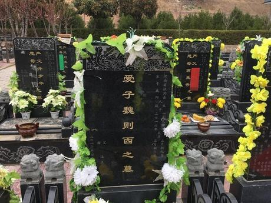在魏则西的阴历周年忌日，父亲魏海全和母亲王可卿带着儿子生前最爱吃的的烤鸭和点心来到墓地。
从陵园路口到墓地大门，大概800米，1000多步，魏海全是一步一步数着，仿佛多走一步离儿子更近一点，但心底深处又有微妙的抗拒，希望这段路更长一点。
这对年龄加起来过百的失独父母，在路上相互搀扶，靠着儿子生前留下的回忆汲取温暖，勉强度日。
母亲说：“则西喜欢吃肉，不喜欢吃菜。”
父亲说：“则西可帅了，如果他觉得和你聊得来，真的是出口成章……不提了……”
魏则西走后，在家里留下的东西不多，生前卧室的单人床上放着彩色遗像。
书柜上摆着魏则西爱看的《史记》、《国富论》，抽屉里有大学时得的两个奖状，奖状下压着魏则西从小到大的照片，衣柜里，有两套母亲给他定做的两套保暖衣。
王可卿仍用着魏则西生前的手机，桌面是儿子生病期间苍白的笑容。
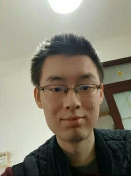魏则西死前的唯一放不下的就是日渐年迈的父母亲。

2016年4月11日晚上，是魏则西去世前的最后一晚，他要求父母关上门，关上手机，一家三口躺在床上聊天。
“爸，妈……你们再要一个孩子吧……如果岁数太大了，就去做，试管婴儿。”
母亲王可卿已经47岁了，自然受孕十分困难。
王可卿也曾坦言：“年纪大了，也不会再有像照顾则西一样的精力，去照顾另一个孩子了。”王可卿指了指魏海全待的屋子，“都是他想要，他觉得这是则西生命的延续。”
最终，夫妻两人听从儿子的建议去做了试管婴儿。可是过程却一波三折，不尽如人意。
去年十一月份，王可卿进入周期进行第一次取卵，打了九天促排针。由于是大龄产妇，四个卵泡最终取出两个。最后，成功得到一个健康的受精卵
第二次取卵，观察到的三个卵泡有两个是不能受精的空卵泡，而唯一健康的卵泡却没有配成功。
第三次取卵，打完10天促排针后，虽然只得到一个卵子，万幸的是，卵子健康，受精也成功。
经过半年的努力，前后经历了3次取卵，王可卿和魏海全终于拥有了两颗健康的胚胎。
胚胎移植后，魏海全为了照顾这位高龄孕妇，每天忙里忙外，下厨为王可卿准备营养餐。
为了少跑两趟医院，魏海全亲自给王可卿打针，每天至少两针。
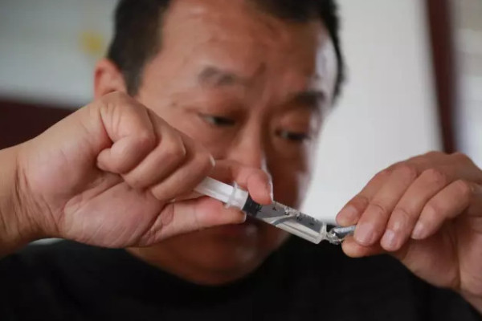可是，天不遂人愿。今年2月28号，化验结果出来了，第一次移植失败。但两人并没有想要放弃的意思。
连孩子的名字，他们都想好了。叫“哲希”
“还是没离开这儿，希望的希”
魏则西的母亲做试管时已是47岁高龄。
进行试管婴儿的女性中，一半以上的年龄超过 35 岁。40 岁以上妇女进行试管婴儿的时候，有一半以上已经无卵可用，必须接受捐赠者的供卵，最终成功的机会还不到 10%。42～45 岁的成功率大概在 5%，一旦超过 45 岁，试管婴儿的成功率只有 1%～2%。
也就是说成功率很低。但是魏则西去世后，再拥有一个孩子是魏则西的遗愿，也是夫妻俩最后的愿望，可是希望渺茫啊。
帮不了他们，只希望这件事能让更多人知道。
不过关于大龄试管，我了解一点， 可以私我为你解答。
希望能帮助到你。
其实，有一位好心人提出帮助魏海全夫妇做试管，但被婉言拒绝了。
其实这对失独夫妇最需要的不是物质上的帮助，而是情感上的关怀啊。
微信公众号“USIBLGBT”
（中央社）“魏则西事件”在5月喧腾一时，如今渐渐平息。魏则西的父母以为调查出炉后，百度或涉事医院会出面道歉，却一直等不到，反而还有人认为他们得到赔偿，向他们开口借钱。
西安电子科技大学学生魏则西生前罹患罕见的滑膜肉瘤。他透过百度寻求医疗资讯，找上武警北京市总队第二医院，但治疗无效，不久死亡。魏则西的死牵扯出百度竞价卖出医疗搜寻广告的争议，被称为“魏则西事件”。
新京报6月14日刊登日前赴陕西省咸阳采访魏则西父母魏海全、王广霞的报导。魏海全表示，孩子走了，再多赔偿都无法弥补损失，但“一句道歉总该有吧？”
中国大陆官方5月公布的调查结果指出，百度搜寻关键字的竞价排名结果对魏则西就医选择产生影响。对北京武警二院的调查也显示，院方存在科室违规合作、发布虚假讯息和医疗广告误导患者等问题。
调查出炉后，魏海全、王广霞以为百度和涉事医院应该至少会致电道歉，但魏海全说，“没有，什么都没有。”
针对百度曾提及的“慰问”电话，魏海全表示，4月28日确实接过一通电话，来电者询问魏则西的治疗情况，并自称是北京的记者。百度则向新京报表示，致电者就是百度员工，且有表明身份。
除了没得到道歉，魏海全、王广霞还被误以为已拿到赔偿，有人因此开口向他们借钱，还有人自称癌症患者的母亲要求他们捐款。随着非议愈来愈多，魏海全说根本解释不清。
报导表示，魏则西去世后，魏海全经常夜里从梦里哭醒，“听见儿子在隔壁卧室喊疼”；他和妻子出门也要算时间，因为现在见不得“背书包的孩子”，得刻意避开孩童上下学时间。
回忆起魏则西被病魔折磨的情况，魏海全说，“就像在命运的桌牌上拿了一手好牌，忽然，啪，一下全没了。老天爷把你最骄傲的东西挖走了，怎么继续？”
魏则西事件曝光,说明国家舆论在进步,想要推动新改革!则西走了,同时也留给了我们另一个深度的思考:接下来更多这样的魏则西,他们怎么办?有病不得治?有病医不起?...他们将何去何从?
我是一名从事IT科技行业的工作者,2016年5月5日一个偶然的机会,我为了咨询朋友的病情进入了一个叫”急淋白血病交流QQ群”里, 群里大都是白血病患者和家属,群氛围还是很活跃,热情的,各种病情,治疗的咨询,都能及时得到群友们的回复,其中一名叫”白血病患儿”引起了我的关注,他每次回复都是很冷淡,灰心的….
出于好奇,我加了他的QQ. 得知他今年才19年,名叫林尤友,是一名大一的学生,家住海南,在征兵体检顺利通过的几个月后查出患有”急性髓系白血病”,目前已经接受了四期的化疗治疗,现在找到了配对的骨髓,只是前期的治疗,已经把家里的经济拖垮了,家里再也拿不出高达几十万的手术费了…他尝试寻求过大学学校帮助,被当面拒绝,他尝试找当地政府帮助,被推拖;他尝试找媒体帮忙,被说不好意思,太普遍,没曝点…
随后,他出示了其的病例证明…是的,正如他所说这是普遍现象,人人都为此麻木了,不是熟悉的亲朋好友,谁会无偿支持呢….随即,我无法敲更多的字了,只字片言安抚了下他……就以为过去了,可当晚,我失眠了,脑海里既是这个少年的卧床绝望的求助眼神,还有我那位朋友….还有群里1000多名的病友,还有更多更多的大病患者们…为什么近几年大病重疾高发?为什么有病医不起?为什么在向社会求助的时候,社会会冷漠的拒绝???,这些为什么使我不得入眠.----以为这些重疾大病事儿,会离自己很遥远,其实就在身边!当晚,我下决心,想帮帮这个少年….待续
链接：魏则西由生病到离世，给你带来的人生思考有哪些？ - 王老师的世界观的回答
来源：知乎
著作权归作者所有。商业转载请联系作者获得授权，非商业转载请注明出处。
陈仲伟与魏则西之死——阶级之间的不欢乐颂
王老师的世界观<img alt="" src="<a href="https://pic1.zhimg.com/c1bc9059af6ade07d13fceca5d602850_b.jpg" data-editable="true" data-title="zhimg.com 的页面">https://pic1.zhimg.com/c1bc9059af6ade07d13fceca5d602850_b.jpg</a>" class="content_image">王老师的世界观 · 31 分钟前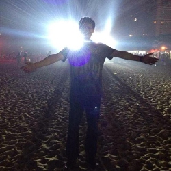王老师的世界观 · 31 分钟前
王老师的世界观
最近朋友圈被三件事刷屏了，一是魏则西因病辞世，二是省医口腔科大夫陈仲伟被砍不治身亡，三是电视剧欢乐颂热播。其实这三件事说的都是一个问题，所以这篇文章的标题同时出现了三个热词。如果只谈实事不论情绪，那我觉得这件事是这样的。
问题一：如何看待魏则西与陈仲伟之死？
先说说魏则西这个小伙子吧，他的死因是“滑膜肉瘤晚期”，关于这个疾病，我咨询了几个大夫朋友，基本的结论就是，想治愈非常难，这个病到了晚期，就是宣判了死刑（新闻也提到医院对他已经束手无策）。所以说，魏则西先生与中国数以万计的因癌症晚期去世的同胞并无不同，毕竟他得的不是感冒。
而新闻的关注点在于，百度忙于做广告，莆田系过度夸疗效，结果魏先生的家人花了大笔钱，还是没能改变什么。
百度做医疗广告有些不合情理，但并非毫无道理。医院吹疗效，虽然于法不容，但在咱们周围这事恐怕也不少吧（绝无为其辩解的意思），购物台卖药的不也吹的基本攻克了所有医疗难题么？
关于治癌症花多少钱这个问题，如果你有这么好的一个孩子得了不治之症，只要有点希望的治疗方案估计你都会不计代价的试试看吧。
所以，魏则西之死这件事情本身，并没有什么太特殊的东西值得炒作。
再说说陈仲伟医生，他碰到的是一个20多年前的患者，说牙齿掉色，于是就凶残的砍死了陈大夫，无论从行为表现上，还是从案发之后的医学鉴定上都显示，这是一名精神病人。
也就是说，陈仲伟大夫意外辞世，不是医患矛盾的集中体现，而是一起精神病伤人的社会治安事件。你可以上网搜索关键词“精神病”、“砍人”（用不用百度您随意），会出现几万条不同行业、不同背景的人被精神病砍死、砍伤的报道，这与大夫这个职业以及医患矛盾这一社会问题并无必然联系。与魏则西事件一样，本身并没有什么值得炒作的点。
问题二：两件没什么特殊的事情，为啥被炒成了社会热点？
因为推动这两个事件传播的人，刻意的将这两件事与社会突出矛盾建立了联系。透过这两件事的新闻报道，不难发现有几个关键词十分吸引眼球“百度”、“莆田系”、“医生和患者”。。。分别的代名词就是，“垄断市场养肥的不争气的企业”，“无良的地域商人集团”、“屁都不懂，只知道闹事的患者”。。。
设想一个不在百度工作，也不是医生的，没看过大病的，非莆田人，是不是特别容易形成这些偏见？
而如果你是百度的员工，你是患者、你是经营一个医院的莆田人，会不会觉得这样的指责特别没有道理，会不会在心里默念“这就是屁懂不懂的人自以为是的偏见，他们就是喜欢骂人。。。”？
这两件事之所以这么火热，就是因为他们触及的不仅仅是表层社会矛盾，而是这个社会最深层的问题——阶级分离
问题三：什么是阶级分离？
这里要说一下阶级是怎么形成的，推荐看一本书，拉斯韦尔写的《政治学》如图：
<img src="<a href="https://pic3.zhimg.com/5e93e0455083995f8d813a2a5a16190e_b.jpg" data-editable="true" data-title="http://zhimg.com 的页面">https://pic3.zhimg.com/5e93e0455083995f8d813a2a5a16190e_b.jpg</a>" data-rawwidth="300" data-rawheight="300" class="content_image" width="300">
（书很薄，也比较有可读性）
在书中对这个问题做了非常好的阐述，这里我就直接说结论。阶级的划分主要有几种形式：权力、知识、财富。。。（还有几个，不一一例举了）。无论你在那个划分标准下，只要你占有的比较多，就是这个标准下的精英阶层，精英阶层就是阶级的原材料。比如你是个大夫，你比普通民众掌握更多的专业知识，那么你就是精英阶层，你与不懂医学的民众就分属两个阶级。
阶级是普遍存在的，因为知识、财富等这些资源分配一定不是平均的。所以一个社会存在阶级本身是没什么问题的，不同阶级的分工协作，推动了文明的进步。
但是，如果阶级与阶级之间，没有了对话和相互了解的平台，问题就来了。人性天生对环境的估计是悲观的，危机感是人类能够生存的重要原因。当人类面对一个未知的领域时，最先产生的感情就是恐惧。
举个例子来论证一下，在远古时代，有两种基因，一种是碰到不了解的事赶紧跑的胆小基因，一种是碰到不了解的事赶紧去看看的胆大基因。显然，最容易活下来的必然是胆小的人（因为胆大的都在各种试错中死绝了）。所以恐惧感这种对生存有利的基因就流传下来了。
当阶级与阶级之间产生了未知感，那么不同阶级之间的人就自然而然的会以最悲观的态度揣测对方。当某个阶级出现一些违背法律、天理的个案之后，在另外一个阶级的揣测中就会被广泛化、阶级化了。比如城管都是暴力的、大夫喜欢收红包、公务员都有灰色收入、路边摊用的都是地沟油、患者治不好就闹事。。。
可以这么说，我们今天面对的所有社会矛盾，本质上讲都是阶级分离导致的。
问题四：阶级分离的最后会变成什么样？
一个制度将会灭亡。
这不是王老师在危言耸听，关于这个问题还是推荐一本比较好看的书给大家吧——《旧制度与大革命》（托克维尔）如图：
<img src="<a href="https://pic1.zhimg.com/b4fe7dfcf73dbb03727b8b3dd8a0bf64_b.jpg" data-editable="true" data-title="http://zhimg.com 的页面">https://pic1.zhimg.com/b4fe7dfcf73dbb03727b8b3dd8a0bf64_b.jpg</a>" data-rawwidth="277" data-rawheight="380" class="content_image" width="277">其中第十章的标题就是“政治自由的毁灭与各阶级的分离如何导致了几乎所有使旧制度灭亡的弊病”。 对于没兴趣读的人，我这里对文章的逻辑做一个简单解释：
当一个社会各个阶级分离的时候，阶级间会积累仇恨（因为悲观的揣测）。同时，阶级的分离导致了不同阶级之间很难形成共同利益，因为富人只为富人发声，穷人只为穷人抗议。
仇恨在一点点积累，而调解仇恨的共同利益却不断在减少，那么在社会的深层，就会有一股力量时刻准备着喷涌而出。这种力量不是底层民众特有的，而是从上到下每个阶级的人都要宣泄的愤怒。
不知道各位发现了没有，在你身边的每一个阶级的人，都有怒火。
一个穷人，会碰到很多困难，觉得被人欺负、被人践踏，于是就有了一肚子的火气要发泄。而一个富商，心情并没有多好，因为要面各种偏见、谩骂，以及权力的压迫，也会有一肚子火气要发泄。而一个掌握公权力的人，也会遭受各种非议，面临重重逼迫，他也有怒火要发泄。。。
如果说，镇压底层民众怒火最积极的是精英阶层（因为要维护他们的既得利益），那么如果社会精英阶层也要发泄怒火的时候，谁来镇压呢？
问题五：我们怎么看待阶级分离？
为啥不谈谈如何解决阶级分离呢？因为之前推荐的《旧制度与大革命》已经分析的很好了，以我的水平恐怕很难用只言片语解释清楚。我这里只是作为社会一个普通一员跟大家聊聊，我们面对阶级分离时候的态度是什么？
通过魏则西和陈仲伟之死，我们看到了社会上非常容易被煽动起来愤怒。为啥有人要利用阶级分离来煽动情绪呢？这两件事也得分开说。
就魏则西这件事来讲，板子打的就是百度和莆田系。百度死了就没有竞价排名了么？莆田系死了就没有科室外包和虚假疗效宣传了么？其实一个企业、一个地域利益集团的灭亡并不能改变什么社会现状。每次被煽动起来的情绪，无非是帮助另外一个企业、一个利益集团上位而已。
就陈仲伟这件事，的确是可惜，一个有多年经验的大夫就这么没了。对于其家庭和朋友是灾难，对于整个社会来说是巨大损失，我也非常的愤怒和忧虑。但是为这悲剧买单的应该是某一个“内心阴暗”的阶级么？我们一定要将这个意外归咎于某个的阶级来积累社会仇恨么？
结束语：标题里的欢乐颂您还没说到呢！
热播的欢乐颂我也看了，不知道你们看到了什么，我看到的就是各阶级已经越走越远这一悲伤的现实。
其中有这样几个桥段让我印象深刻：
1、小邱爱上了白渣男，小曲以勾引的办法去测试白渣男（也有点炫耀魅力的意思啦），结果小邱气的要弄死小曲。最后在樊姐和关关的帮助下，砸了白渣男他家。
2、小邱被解雇了，在家看狂热的成功学，安迪恰巧路过，劝了两句，结果非但没用，还得罪了小邱。最后在樊姐的开导下，重获新生。
3、安迪被人在网上污蔑，樊姐、关关、小邱特别义气的帮她声张争议，樊姐还去求了老情人。但是，真正帮忙解决了问题的，是与安迪在同一阶级的小曲。
4、小曲对樊姐一直有“捞女”的偏见（因为她理解不了另一个阶级的世界），对关关与小邱则是平行的生活（因为的确没什么好聊的）。
分属不同阶级的人，居住在一起，大家都是诚心实意的想要靠近对方，但是阶级分离，导致无论你怎么努力，都无法真实的参与到另外一个阶级的事务中。阶级之间可能真的永远都不会再有什么共同语言了吧。
人性中还有一种最大的恶，叫无能为力，与则西一样，我父亲也是转移到肺癌，然后去307医院求医，当时看的是秦海峰主任，秦大夫人非常好，这是我十几年去医院遇到的最像大夫的医生，秦大夫人非常热情，看了父亲的相关资料，说现在病情很严重，问道能不能走动，我说可以基本自理，秦大夫讲，如果能走动，那最好快点来，我帮你联系住院，我所在的这个肺部科，现在没有床位，你们先去肝部科，过一段时间，有床位了，再转过来，然后秦大夫亲自打电话帮我联系肝部肿瘤科，然后告诉我可以找肝部肿瘤科的林莉主任，我找到林莉主任后，林莉主任详细问了一些问题，看了相关资料后，说，我要看下病人的情况，再决定是否接收。
过了一个星期吧，我安排家人过来，要约定的时间，挂了林莉主任的号，从7点半，一直等到11点，父亲也一直在医院等着，然后叫到我们的时候，我陪父亲进去，父亲是自己走进去的，这一点与则西去307的状态要好很多，当时林莉主任看了资料，然后跟父亲进行了交谈，差不多有十分钟，然后跟我说了一句，比我想象的状态要好很多，然后给我父亲开了住院资料，然后，我父亲下午就住院了，在此我依然感谢秦海峰主任，林莉主任。
第三天，我接到家人的电话，讲林莉主任要求我们必需出院，我去了以后，才知道，原来家人拿了一张前几天拍的片子给林莉主任，林莉主任认为我们欺骗了她，这个，我事先并不知道，我当时在北京，当时，我也先向林莉主任说明了情况，并道歉了，但林莉主任依然要求我们马上出院，我只好马上去找秦海峰主任，秦海峰主任说，要不，你们转过来吧，我这里有床位了，我问了下情况，只要林莉主任开个转院证明就可以了，我找到了林莉主任，说明了情况，说现在病情确实很严重，能在林莉主任这里治疗最好，如果真不能就麻烦开个转院证明，转到秦海峰主任那里也可以，林莉主任坚决不肯，说她不会开证明，想转到秦海峰主任可以先出院，并威胁道，如果我们下午不转院，就要把我父亲转到ICU
我没有办法，只好再找到秦海峰主任，秦海峰主任可能是接到林莉主任的电话，秦海峰主任讲听林莉主任的电话，说，听林莉主任讲，你父亲的病很严重，我说，确实很严重，如果不严重也不会来咱们307这么好的医院来看病，不过，我父亲身体还可以，基本可以自理，能走，能吃，来307时，等了一上午，现在的情况，应该还可以治疗，秦海峰主任听后了，说，现在只有做基因检测，找针对型的靶向药物，看能不能找到这类药，如果能找到，可以延长个些时间，这个要看个人情况，秦海峰主任说，我帮你给林主任沟通一下，说完就打电话跟林莉主任说，电话中，林莉主任十分不高兴，说不能做，秦海峰主任说劝着说，应该可以，那个谁不是也是这种情况，不也做了基因检测，也找到了靶向药物，他当时的情况不是比这个还严重吗？（说的可能就是则西）讲了一会，林莉主任同意了，秦海峰主任说可以了，你直接的找她开吧，最好快一点，这样结果能出来的快一些，早一天用上，早有效果。
当我回到病房找到林莉主任时，林莉主任却说，想了下，还是不能做，还是要求我们快点出院，我当时大脑一片空白。说，刚刚，你不是和秦海峰主任说可以做的吗，林莉主任讲道，太危险了，我说，有危险，我们也希望做，有什么后果，我们自己承担，我可以写个证明。然后林莉主任十分勉强的同意了，我十分高兴。不想过了十几分钟，林莉主任再次找到我，说不能开。并要求我们出院，我当时都快气疯了，怎么有这种人。我想了很久，只能再次找到秦海峰主任，这时已经下午6点了，等秦海峰主任开完会后，秦海峰主任讲，听林莉主任说了下，下周一给你们开，我把林莉主任说的让我们出院，并不开单子的情况，讲给秦海峰主任听，秦海峰主任听后，想了下，说你要不再找林莉主任好好沟通下，我当时心乱如麻，没有多想。
当时，没有办法的情况下，我们只能办了出院手续，父亲当时很不想出院，问我们可不可以不出院，感觉在307治疗很明显，能多吃饭，能睡好，也有精神了。我心里有滴血，却骗父亲说找到一个更好的医院，然后带着父亲去了丰台英博肿瘤医院，这个也是家人百度来的，做的也是CIK免疫疗法，花了近二十万，跟则西一样，效果不明显，而且很快变扩散了。四个多月，父亲就走了。则西比我父亲幸运，在307做了基因检测，并找了针对性的靶向药，而比则西状态要好一些的父亲，却很快的走了。直到现在，我的心依然是紧的。不失去至亲，永远不能明明这种深入到灵魂的痛。现在想来，当时由于年轻，由于当时情况，病急乱心，心乱了，很多事都没有做好。不然父亲也走不了。这件事过后，我相信了医院里还是有不少有医德的好大夫。CIK免疫疗法还是不要用，这个有扩散的风险。化疗最好也不要用，效果与付出不成比例，就父亲的情况来看，中医效果比较明显，但由于一些情况，没有坚持一个完整的疗程。这个中医是指名方，古方。不要乱找野中医。大概就这些，有些有时间了慢慢来写。
再次感谢307医院的秦海峰主任，作为大夫，你已经尽力了。祝父亲在天堂过的好！那里没有病痛。BAT三国志———李阿瞒传
东汉末年，并州之东，一寻常李姓家得子，取名：阿瞒。幼时迷戏，放荡不羁。少时修品行，研学业，后以最优之成绩考入京都学府。时天下大乱，然阿瞒心无旁骛，未被乏味消融，赴蛮夷之地习术。后经松下、华尔街、硅谷三段砥砺。
黄巾贼当道，李阿瞒视势为机，毅然身归朝廷，被官拜骑都尉，受命与皇甫嵩等人合军进攻颍川的黄巾军，结果大破黄巾军，斩首数万级。然东汉朝廷日益腐败，致使奸邪之徒满朝，阿瞒深知无法匡正，加之地方豪强谋划废黜，纷纷举兵自立。
阿瞒亦不甘春夏读书，秋冬弋猎，遂至陈留，散家财，合义兵。集夏侯惇、夏侯渊、曹洪、曹仁、李典、乐进、邓志才八人一行，于北大资源宾馆起兵。
首战即倡召天下英雄讨伐董卓，董卓、郭汜、李傕之辈乃当世“三大门户”，却抵不住阿瞒开展的竞价排名计划。只好焚烧宫室，退入关西，就此消迹江湖，再无翻身之日。李阿瞒一战成名
闻兖州有黄巾军余孽制上网导航，名为hao123，李阿瞒“设奇伏，昼夜会战”，终击溃贼寇，获降卒三十余万，人口百余万。阿瞒收其精锐，组成军队，号青州兵。继而一鼓作气，先后破徐州陶谦、灭濮阳吕布、降宛城张绣。将安居客、91助手、糯米网等威震一方的豪杰纳入自己的战略部署。
就此北方大半归于李阿瞒帐下。然有袁世一门，四世三公，门生故吏遍天下，盘踞冀、并、幽、青四州之地，后方稳固，兵精粮足。同为搜索引擎，阿瞒可谓效彼。无以为继，阿瞒只好迎献帝，迁京都。献帝予其司空，就此百官总已以听。阿瞒以正义之师，狭天子之命，封袁谷歌之屏蔽词，囤兵官渡誓与袁谷歌决战。因匡扶汉室之由，引来无数英豪。武圣关羽先后斩颜良、诛文丑，袁谷歌谋士反叛归降献计，阿瞒夜袭乌巢，劫其大部之粮草，一击即溃，从此再无喘息之机。而后袁式三子内乱，阿瞒乘胜追击，然李阿瞒之“奇佐”郭嘉郭奉孝因舟车劳顿日夜操劳毙于途中。故虽一统中原，称霸于世，今后罕逢敌手，但奉孝之丧，影响后世颇深。
而后经降荆州刘琮，阿瞒又拿下了携程、去哪儿、爱奇艺、PPS及入股uber等。位极人臣之际，李阿瞒连续两年被世人供为“首富”。愈发刚愎自用时，阿瞒欲乘势一举鲸吞江东，执意与AT两家决战赤壁。北人南下，不善海战，加之暴毙之人愈胜，群臣众谏曰：乃水土不服也。然一少年才俊进账直言，非水土之因，而有肿瘤之疑。此时庞统入账，称有蛮夷之技，可医治三军，联合战船即可不再病发。阿瞒信之，而后遭火攻大败。
华容道上，阿瞒遇伏三次，苟且之后，大肆呼喊：若奉孝在，安能惨败？！忽思得那日少年，颇有奉孝之状，问左右，其何人？答曰：此人姓魏，名则西……
就此阿瞒指派张辽、乐进、李典三人镇守庐州，再未有过江之念。而一路向西，平凉州马超、争汉中张鲁。亦有传其收AC米兰者，甚嚣不余。
建安二十一年，李阿瞒被封王建国，加九锡，邑三万户，置百官，以天子礼。群臣众将请阿瞒定国号，曰：魏！
建安二十五年，阿瞒大病，宣神医华佗来治，阿瞒误其为庞统之辈，二度加害，羞辱一番后关入狱中。阿瞒当年病逝于洛阳。
故有后人题词云：众里寻他千百度。蓦然回首，那人却在，灯火阑珊处。
以前发回答都是偷偷摸摸匿名的...怕被人看到，觉得自己这点事太丢人。
这次不匿。
看完了魏泽西所有的回答...但原本是因为百度的事情来看的。
我知道的太晚了。只有这一个感觉。
但早那么一点知道也许也真的不会有用吧，只是或许能陪着他走完最后一程。
实话，没经历过那种绝望的人真的不理解...我作为旁观者，看着自己的亲人，活生生的，一步步就那么死了。
看着他从微胖的大肚子变成去世前骨瘦如柴，看着他从一开始永远能包半桌饭变得我喂一个橘子都只能含在嘴里慢慢喝掉里面的汁液。
现在唯一的印象就是他含着橘瓣，瘦得不像话的脖颈上喉结慢慢滑动，看他以前圆圆的脸上有点狰狞地筋骨嶙峋地活动着肌肉。
安安静静地，没有一点声音。这画面就像一副老电影，落着灰，无声地一直循环在记忆里。
很丢人的，我当时眼泪不由自主地就流下来了，事后真的很后悔，可惜再也没有机会。
看着另一个人就这样挣扎着走到结局...真的很难受。
我甚至觉得自己能看到他的挣扎。
我竟然以为我已经忘了。
该死。
抱歉，不知所云。但我真的不只是在痛惜于过往。
发出来总觉得写错了...但是点进修改又不知道该怎么办...就这样吧
我也如此，可是所有事件话题刷下来，我湿了半张纸巾。我是真的怕。也许有很多人说百度上面搜索出来的带推广都是垃圾，这常识都不知道。
也许你知道，我知道，他知道。可我父母不一定知道，我的亲朋好友也许不知道，我只要一想到如果有身边的人有重病，通过百度来救命，我整个汗毛都竖起来了。生命在倒计时的阶段里，任何消息都是救命的稻草，可这是段绳怎么办？我随便想想都不寒而栗。我简直不敢想象魏则西他父母在知道这医院不仅不能救命，反而延误病情时的心情。天塌地陷都不为过吧。
百度有错，很多的人站出来指责百度的竞价排名，百度的股票大跌。看到这个消息的时候，我看到一条评价说她说他说不出来自己是什么感受。我也是。都说家事问百度，可现在如何问，谁敢说问？百度，你本应是骄傲的呀。
而莆田系医院更是令人发指，根本就无地可洗！拉出去千刀万剐都不为过！不能医人救命还谋财害命简直……我连怎么骂都不知道，任何辱骂的词语都不足与形容其无耻！
希望逝者已逝，生者需自强，只愿魏则西能在天堂保佑他的父母。
原本，是不想写这些的，写了就必定在回想难过一次。
一路走好。
则西爸爸妈妈节哀，您们好好的生活才是则西最大的愿望。
坚持了那么久，生命还是会在一个大概已经预料到的时间到达终点。我们有过渴望，有过幻想，有过侥幸，可每个人都是那么无力，无力对抗自然规律。
四年前，老爸朋友的儿子骨癌去世。我都还记得再见到那个孩子的爸爸妈妈时，爸爸脸上的强颜欢笑，妈妈的失魂落魄。大概从那时起才知道什么叫生命无常。四年中逐渐看着叔叔阿姨慢慢走出来。从换了无数套房子却依旧缠身的梦靥到现在潜心练太极。我想也许生命中的劫数，时间是痛苦唯一的溶剂。
那些痛苦，我们永远难以想象。去年关注的另一位癌症患者是个留学早稻田的女博士。看她的文章特别喜欢一段话。
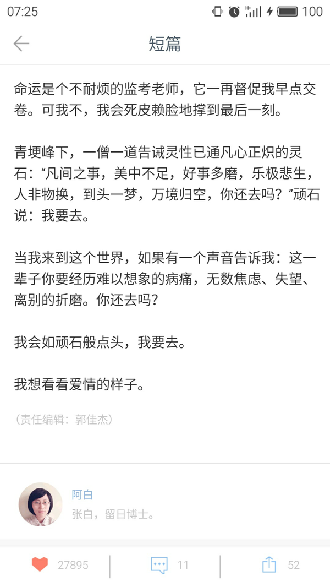不幸得知她也在上个月去世了，而我却因为很久以来对她疏于关注而没有在她回国治疗筹款时尽微薄之力。
祝他们都好吧，毕竟都如此坚强生活过。
魏则西因为百度上泛滥的虚假广告而死，那么这种悲剧不会再重复了吗？
请看 因为今日头条发布的虚假广告导致消费者上当事件调查, 如何看待今日头条在新闻条目中夹杂售假广告的现象？。
好像又过去了一段时间了，说些自己想说的，浅薄的见解，见笑了。
其实特别惧怕去面对生死的问题，就好像魏则西事件热度炒到最高时知乎每天都推荐，可我不敢点开看一眼。昨天，终于一条一条的翻完了所有的相关答案，心像破开一个大洞呼呼的漏着风。
想到班主任说起患胰腺癌的刘老师时我们班全体的沉默，课本里夹着的政治试卷命题人一栏写着他的名字，不断提醒我们他的离开。
越长大要面对的离别就越多，不论是在自己身边的，还是从媒体上关注到的。
我的同学，在17岁的花季选择了离开，从教学楼楼顶纵身一跃结束了他年轻的生命，震惊了所有人，好多人哭红了眼，我过了很久都没办法走出来，而他的亲人一定更加难过。他的生命本还有更多的美好和期待，他是这样的聪慧体贴的人，然而。。。。
当然，我们只能去惋惜，不能去评判他的选择是对还是错，毕竟我们不是他，不了解他所经历的，所以我们不能随意的去说“真蠢，不就是为了一点小事吗，一点都不值。”
以他为例，我想说的是，现在年轻群体里轻易放弃自己生命的人真的很多，我有时也会冒出轻生的念头，尤其在高三这么紧张的时段。确实大家都有自己的理由和苦衷，似乎都很合情合理，真的是太痛苦了，所以不如去死吧，对吗？
其实都是借口，死亡才是懦弱的表现。
魏则西在那么痛苦的时候，都没有放弃生的希望，诚然他肯定有过那样的念头，可他敬畏生命，正是那种对于生命的敬畏，支撑着他到生命的最后一秒。
所以，我决定从今天开始，学着去“贪生怕死”
“贪生怕死”，似乎和我们惯常宣扬的价值观不符，但这并不是一种怯懦。在我看来，其实是一种源于人性的品质。我们应该怀着敬畏之心去对待生命，爱惜自己的生命，才会更懂得生命的宝贵，从而去珍惜这个世界的每个存在。
身体发肤，受之父母，损毁即为不孝，虽然说法有些极端，但道理是极为正确的。
我们熬夜，过度用眼，不休息饮食，一点点的损耗我们的健康。却不知道一个小小的原因就可能诱发疾病，让人卷入痛苦的深渊，连累身边的亲人。年轻是娱乐的资本，让人看不到隐藏的即将到来的危机，细思恐极。很多道理我们都懂，却不愿意真正付诸实践。看了类似的新闻后慨叹一会生命的无常又马上去挥霍生命，好悲哀。
妈妈是肿瘤科的一名护士，她常常和我讲起许多病人的故事，告诉我他们的坚持，说着说着会忍不住哽咽。
还有很多的“魏则西”在坚持着，与病魔顽强的抗争着，我们祝福他们
我们也许不能帮到他们，但我们可以让自己变得珍视生命，敬畏生命，好好的利用自己的生命，去过好自己的每一分每一秒，不给自己的家人添负担。
魏则西墓志铭
来源：墓志铭碑文网http://www.chinamzm.com/
魏则西，甲戌年正月初九生于陕西咸阳，丙申年三月初六故于秦川，享年二十有一。豫扶沟之传人，西安电子科技大学二零一二级计算机专业学子。
少小聪慧，文理通鉴，雏雁展翅拍尘云；
青春有志，宏愿高歌，象牙塔内修贤达。
甲午三月，偶感不适，寻医方知滑膜肉瘤恶疾；
休学求生，走南访北，探问四方怎奈无力回天。
手术三次化疗四次二十五次放疗，药价高于命，债链长过长街；
同窗援手饭堂门外十数个捐款箱，筹善款八万，爱心高于城楼。
钱花光，不得治，怀抱锦月问苍天；
髓未干，泪断流，走投无路寻百度。
又坠恶魔窟，武警北京总队第二医院；
白鬼李志亮，杀人再骗钱财二十万余。
拿钱买命来，生死界前两无奈，人吃人，人间豺狼四伏击；
人财两空茫，人鬼交身叹进出，鬼哭鬼，阴间冤魂八方游。
呜呼哀哉！勒石散为铭：
生在人权人性磨灭社会，
死于冷酷冷漠混沌时代。
除你之外，不知道还有多少的家庭深受其害，百度实在可恶，生命是远远大于金钱的，是它的万倍，千倍。
不知何时，这个社会的价值观变了，变得自私，变得贪婪，为了满足少数人的金钱欲望，有多少无辜的人被害，若社会继续这样发展，人们的贪念越来越大，后果真的不敢想像，也许是我杞人忧天了，但愿是。
我难以想象你所承受的痛苦，你是条顶天立地的汉子，我敬你，愿你在天堂安好，天堂没有伤痛，再祝福！
二老坚强点，祝你们健康。最后再致以我最真挚的祝福，健康平安！
这些年来，百度为党和政府挡住大量有毒信息，也做出大量牺牲。前几天李彦宏刚被网信办约谈，百度就放出6.4的部分信息，现在宣萱不得不要求各网不要再炒作魏则西事件了。这些年，百度已经抓住了党和政府的大量把柄，此次风波过后，百度应该会安然无恙度过，反而莆田系医院可能要受到巨大打击。
私人承包医院不是一年两年了，这肯定也涉及了各个部门，行政方面谁的责任？
百度向来不要脸，这都不算什么。
我觉得，这个时候，我们需要温暖，需要力量；但我们更需要勇气，需要更多的声音，需要去改变，只有改变，才能慰藉则西的牺牲，只有改变，我们才会知道，原来自己的生命也不枉来过这里，有那么一点意义。
我爷爷也死于癌症前后拖了十年时间，我很想念他。爷爷临死的时候医生一定要给爷爷打1针蛋白针之类可以起死回生之类的那时要价十万，家人义无反顾的打了，打完爷爷就不行了。后来知道爷爷当时身子很弱打完就肾衰竭了。
也许我说这些不合适，但也是我的一些体会。
有的时候觉得对于绝症的治疗本事已经是一种需要而不是治愈，需要花钱做手术，需要花钱做化疗，这些需要的治疗变成了需要花钱，我们花钱为他付出，满足了我们自己的需要，因为在当时我们需要付出，但既然已经知道是绝症为什么不坦然接受命运的安排，老人在临死之前假如不接受是不是也要以希望的方式向天再借五百年。也许最后打入你体内的强心针就是压垮你生命的最后一根稻草。
除了大家看到的问题外
作为保险从业者，我看到更多的是：中国大学生普遍的问题
人生风险管理的缺失
中国的大学生，您是青年，而您是又是最脆弱的。
因为您是年轻的，因此您的天性缺乏风险管理意识
因为您没有经济来源，因此您的保障来之于您父母的保险意识
可是我们都是知道一个 事实：“黄泉路上无老小””，
一旦大学这个阶段发生风险，家庭必然倾力相助，20岁上下，于父母来讲，是他们生命的全部和唯一的延续。
只是面对大额医疗开支的时候，多少家庭只能是有心无力，最恐怖的是：纵使倾其所有，满身债务，也是落得人财两空。
人能不能换回，父母的不二选择，结果交由上天和医生了，横亘在父母面前钱呢？
可惜，中国的大学生们，您不知道医疗保险有多便宜：A、312元一年，1元1天都不到，医保外再多一个50万的医疗账号（不区分是否医保范围，全额报销）
40岁，也就657元一年
条款请参见
&lt;img src="<a href="https://pic3.zhimg.com/30469c7fed938f69b978ed91d4cba9e6_b.jpg" data-editable="true" data-title="zhimg.com 的页面">https://pic3.zhimg.com/30469c7fed938f69b978ed91d4cba9e6_b.jpg</a>" data-rawwidth="168" data-rawheight="168" class="content_image" width="168"&gt;
B、20岁的人啊，4032元一年，无上限报销，就诊区域扩展到海外。
所以中国的大学生，青壮年，医疗有困难，真的是个伪命题。
中国的大学生，您是青年，而您是又是最脆弱的。
因为上天还没有给你您足够的时间去累积财富，
您的脆弱是说“您没有抗风险的财务能力”。
鉴于这些医院与百度有利益关系(每个访客点击百度搜索的“医院”链接，这些“医院”需要向百度支付100元(不等)。
请大家没什么事就点击这类链接，让这类医院破产！！！(虽然便宜了百度)
再说下魏则西这个事件，我确实是在五一期间刷屏得知这个事情，从最初的愤怒到最后的冷静思考到为了则西父母感到悲哀，其中各种滋味。不在评论涉此时间的百度、莆田系、部队医院了，各位知友已经说了很多了，我只是想从“失独家庭”这个话题说下自己的看法，其实内心是纠结的，70、80后是最早的计划生育的一批人，我也是独生子女，现在也结婚为人父了，虽然是国家已经放开二胎政策，但是我和爱人达成一致意见是不再要了，她是怕疼，我是感觉自己没办法把父爱分成两份平均给两个孩子，这不关乎是否能养活孩子，就是觉得对待孩子是不公平的，可是看到身边一个个失独家庭的出现，心中会出现害怕的情绪，其实人最大的悲哀就是中年丧子和白发人送黑发人，这个我确实没经历过，也不想经历，但是没法挡住我思考这个问题，我记得妈妈给我说的最多的就是听不了我有病，哪怕只是很小的发烧感冒，花钱是小事操心是大事，原来不懂不理解，现在为人父了，懂了也理解了，从孩子出生以来尤其是一岁多的时候，一弄就是感冒、发烧，甚至有一次医生说疑似手足口，爱人是护士，也被吓坏了，但是我还是故作镇定的安慰爱人，其实我心里也是恐慌的，所以我现在只是稍微理解了则西父母的感受，确实是孩子真的就是父母的心头肉，真的是哪怕这种病发生在自己的身上都不愿意发生在孩子身上，那种心情绝不是一句话可以表达的，那就是那一刻最真实的思想表达，所以说百度、莆田系、部队医院也好，则西也罢，其实最最痛苦的绝对是则西父母，中年丧子那种痛，绝对不是开玩笑的，所以感觉这会说一些鼓励的话显得太苍白了，觉得只是不要再去打扰这两位了，因为我相信每提一次，就是在他们的伤口继续撒盐，给他们一个安静的空间，不要打扰他们，让他们慢慢治愈心中的痛，虽然知道那是不可能治愈的，但是我觉得大家就是默默的送上祝福就好。
人已经去了,说什么如果都白费了.
可是还要说.....
如果
如果国家把光腚总菊监管审核剧本的能力放到监管食品,药品等关系民生的大事上
何至于此?
前有三鹿,后有疫苗,再有莆田....
借用星爷一句话叫做:如滔滔江水连绵不绝
可惜不绝的不是敬仰
是伤害
是对民众生命尊严的一次又一次践踏!
只可惜
我等能做的
除了在这里敲打几个表达愤怒的字以外
什么都做不了....
默哀三分钟.
最后，祝则西一路走好，二老节哀！
我工作三年，毕业时接触过这类医疗公司，对他们深恶痛绝，一直关注他们的动向，年前百度跟莆系产生矛盾解决，以及互联网大佬进驻医疗行业等等事件，让我觉得个人真的很难对抗和承受这种极其卑劣但强大的势力。
但我明白这种势力也是羸弱的，平凡而弱小的生命得不到尊重，这种伤害和悲愤聚少成多总有一天爆发，但今天关注了则西的事情，我觉得他就是我身边那很可爱很勤奋很善良的学弟啊，心还是觉得无比的悲痛和悔恨，我憎恶自己当过驼鸟纵容过恶势力，每一次的不发声其实都是充当帮凶，伤害无辜的生命，未来更可能祸及最爱的朋友和家人！
新闻事件的时效会过去，悲愤也会被冲淡，但这些终将会刻在那个善良人的心底，绵延起来成为这个社会无法抑制的暗涌，每个消逝的生命哪怕萤光也会汇聚成为最亮的启明星。
我希望每个人都能保护好自己和爱的人，对社会的恶意保留最紧张的态度和最勇敢的抗击！
最后作为有安稳工作的小女子，觉得现今资本的大潮汹涌而黑暗，真心希望创业的男人们能保有良心做正确的事情！Don't Be Evil！
这个事例其实也告诉我们有时候网上的搜索真的不能相信，医院还是公办的有保障（可能我比较偏激）。
还有就是，百度真的需要反思。如果说这件事情百度没有责任，可能也都不相信。你拿了钱替人家打广告，Ok，那你在前面能不能标注“广告”字样。愿意搜百度是因为相信，（当然，个人也有原因），百度一家独大，高管审核不能因为钱就这么过去。极端点的说，你怕不怕你父母也搜百度医院，结果出现了同样的后果。
最后就是提醒那些上网的人，真的，网络是个坑，时时都要长点心
愿“魏则西”在九泉之下安息，因为有无数社会正义人士的强烈呼吁！！！
这个社会，不单单是一家百度，很多很多的普通人一样，没有了原则，放弃了自己的良知，！
一个浮躁的社会，一个没有责任的社会，一个没有良知的社会，一个没有信仰的社会，所有一切都在向钱看，人与人之间最基本的信任都没有，拿什么去实现所谓的中国梦？也许真的只是一场梦吧
想起上个月看到则西写的东西，深受感动，他对生命的渴望，使我几度潸然泪下，能做的只是默默的支持他，为他祈祷，希望他能活下去，好好的活下去，走完一生，可以笑着离开这个他深爱的世界……
可惜事与愿违，4.12号他离开了我们，年轻的生命就这样结束了，惋惜之余更多的是心痛，他经历了这么多，受了这么多苦，终究是没能挺过去。
则西，加油，
远方的路你自己走好，那里你也可以实现自己的梦想。
我们能不能，拥有一个更安全的搜索引擎？
我们能不能，不让下一个魏则西再上当？
我们能不能，让百度，莆田为此接受惩罚？！
我们，能不能让魏则西安息？！
不论百度，莆田在上层有什么，总有一种方法，能解决这一切。
为此我坚信，深信不疑。
我希望他可以开心的笑，忘记在与病魔斗争时候那种痛苦 ，希望他有一天俯视大地时看到的是上一片光明 ，互联网不再有太多的虚假信息，医生不会为利益而伤天害理残害百姓。希望他的离世激起的波澜可以带来改变，希望他永远被我们记住。
价值竟如此可贵，纵然家里有癌症晚期的阿姨，但也只因为她的似乐观不在意的生活态度，只是偶尔捎去只言片语的关心，不曾明白她是否有对疾病的恐惧，对生命的渴望，看着她一次一次因为化疗而越发苍老，我却只是慰问之后便无所思考，没有感受，原来，只有失去后才能明白，生命诚可贵。看到魏则西这般对生命的热爱，与病魔抗争的精神，身为高三学子，感慨颇多，自叹不如，我的生命还很长，且行且珍惜。
开灯看了一个晚上关于他的故事，也许这条路对于他来说是宁静的，平和的，至少天堂里不会有不舍，不会有内疚，不会有放不下父母，不会有疼痛，不会有欺骗，不会有分离……
只是他的爸爸妈妈更应该加油，好好的保重身体活着，这样他在天堂才真的没有负担，若干年后，他一定还会选择你们做他的父母，因为你们是那么的坚强，善良，正直，爱他！
加油！今天看手机新闻的时候，知道了魏同学的遭遇，逝者已矣，生者如斯。希望其双亲能够节哀。
魏同学已经往生，本不应该再做打扰。但他的离开，留给我们的不应该只有悲天悯人的情感释放的通道和对百度、莆田系的唾骂。更应该是指明行动方向。
知乎实行手机号码注册，号码又是实名制，不说抓到，获取诈骗犯的相关信息应该不难。
百度，作为国内主流的搜索引擎，竞价排名本是其业务来源，无可厚非。 但是其牵扯到医疗技术这块的信息，必须进行认证，人命大于天。事情已经出了，再不做整改的话，和草菅人命没有区别。
莆田系？这是最难以理解和接受的一环，“有些人不明白为什么武警医院、部队医院、野战医院之类的会成为莆田系游医承包科室的重灾区。因为武警和部队医院，本地卫生部门没有直接管辖权。”这是微博上一位网友的说法，天呐！医院科室居然跟大学食堂一样，可以承包？！老百姓还敢去医院就诊吗？与谋财害命别无二致。同时，本地卫生部门没有直接管辖权，难道就等于没有部门可以管了吗？还是说是相关的监管部门、武警医院、莆田系游医之间有剪不断理还乱的利益纠葛。
接着是政府，4月12日，魏同学离开了，至今为止，似乎没有看到政府部门对此的回应。没有任何调查跟进，没有任何新闻发布会。离开的虽然只是一个人，但是他却是一把利剑，捅破了大部分人所不知的医疗黑幕，是武警医院！是国有资产！私人野诊所导致的人命伤害，尚且是社会问题，国有医院，竟然可以承包科室！难道真把老百姓当成砧板上的鱼肉了吗！！着实令人心寒。
只希望作为国家管理者的政府，能够知道底层老百姓的生活不易，做相关处理，该规范的规范，该取缔的取缔，该枪毙的枪毙。
吾皇万岁万岁万万岁。
那么多并素不相识的人关注着这些艰难的人生。
大概是迫切的想看到这些善良而不幸的人们终能通过努力用过坚持能够挨过去。然后结果总事与愿违。这些并未作恶的人何至遭遇这些困难？
说好的善恶终有报呢？
为什么？
凭什么？
如果真有来世，愿他今生已受尽的所有苦难还尽所有恶业报故，来世平安康健。
曾因他的回答感同身受，哭过也坚定过，今天才知道他去世的消息。没法形容这种难过。打出“一路走好 天堂没有百度”这句话，更多的是嘲讽和茫然。珍惜健康，珍惜身边人。至于和百度这种作恶行为相关的所有人员，我衷心祝你们天道好轮回。不信抬头看，苍天饶过谁。
以上是今日发到朋友圈的内容，从未对百度如此憎恶过。
之前特地把则西的回答加过收藏，文件夹名叫“加油啊拜托”，而后时常关注，期待某天他会上知乎来回复一句安好。
此时的心情难以言表。
好在你终于摆脱了身与心的病痛折磨。一路走好，未曾谋面的朋友。最近一个月因为各种的问题在烦恼着 无人可说 在这个城市我也没有朋友 现在一个人在办公室里加班 远离家乡来到这里我也不知道未来的路会走到哪 可能真的在生命面前其他问题都变得不再是问题 来看你已经是我的习惯了 反反复复看你说的话 看下面新增加的回复 再把你的主页刷到底点曾经和你有关的东西 最近几天看到你的时间轴 还有你的照片 无法想象一个人就这样不在
我很喜欢bobo&toto的燕尾蝶和光之豚 意识里也很早就执着的觉得不在的人不在的事情不是真的不在了 超级相信有另外的一个世界 今天早上同事说起他对生死的看法 大概我们都是有神论者吧 他说觉得二十岁的时候不在了去那个世界的话就是20岁的样子重新开始 而如果80岁去那里也只会留下80岁的模样 所以我想在那边你肯定是帅气又阳光 没有病痛 老去的人都会羡慕你的年轻 以前的很长一段时间里有了心事都是写成纸条 塞进一个大罐子里 后来刚有了手机就存草稿箱 满了再删 再后来懒了就自己和自己说话
能这么和你说说话真的很好 我会常常来看你
愿你一切都好 愿你的父母以后的以后都能变得好起来 你在没有痛苦的地方 要罩着我们啊 愿曾经的眼泪都变成欢笑 苦尽甘来
偶然的机会，在知乎上认识了则西，从此只要打开知乎，都要去看看他的状态有没有更新，因为只要更新就证明他还好好的活着。其实我是个很胆小的人，去医院都不忍心看被病痛折磨的患者，而每次看则西的文字也都想哭，觉得很心疼难过，但是真的特别期待某一天能够看到他说自己康复出院了。
很抱歉，今天才知道这个噩耗，接下来的一天吃素悼念，一路走好，愿天堂没有病痛。
也希望我们健康活着的各位更加珍惜生命，感恩生命带来的美好，一生平安健康喜乐。
则西，你的坚强感染了我，你把你的痛苦经历写下来，提醒了忙碌于世俗的人要珍爱生命，珍爱家人。
天堂没有病痛，愿你一路走好！
则西，很高兴认识你。
从今早知道则西离开的消息到现在一直处在很压抑的状态，思绪万千又不知道从何开始。
他是我生命中第一个离开的同学，其实在此之前我们也有十年不曾联系了吧。印象中他是个高高瘦瘦数学很好的男生，当他再次出现时，他一切依旧除了在承受着病痛的折磨。与很多知乎上关心他的好心人不同，他对于我而言不是素昧平生的名字，而是一个鲜活的人。因此这种你生命中真真切切的存在与离开是让人措手不及，不知所措的。
去年去看他的时候，他一直在说他只想活下去，不为别的只为父母。这一年，真的，他也一直在努力的活。前段时间我们城市有一个男生自杀了，这个男生不知道他轻易放弃的东西就在这座城市里有一个人如此渴望。所以命运这个东西有时候真的好奇怪。
其实本来想过一段时间再去看看他，看能不能帮他完成一些什么心愿，结果也没有机会了。所以每当我们想做什么事，想见什么人，想说什么话，就随着心意去做吧，这样遗憾会少一点。还有道别也要好好做，因为不知道还能不能再见。
虽然我从未问过，但我确定他的一生一定有太多太多的遗憾，毕竟22年太短了。真的希望如果有来生，请给他足够的时间与精力去体验所有他还未体验的事情，去经历他还未历经的人生。也是在今天我突然明白，愿你一生平安喜乐真的是来自我的最好的祝福。
其实从开始到最后，我做的最多的事都是默默的关注，因为除了一点点钱和几句苍白无力的加油以外我真的不知道还能做什么，说什么，因为这世上从来就没有感同身受。尽管这两年你走的真的很辛苦，但是你让我看到了真正强大的信念与求生欲望。感谢你曾来过，遗憾你已离场。愿你可以保佑叔叔阿姨未来的人生平安顺遂。你活过并且永远青春！4月12日魏泽西去世。
我半夜翻知乎看到魏爸爸的回答，又翻了翻他往日里的回答。
原来为一个人心塞心酸心疼的时候真的是心发酸有些疼想落泪，真的是一口气堵在心口，不是修辞而已。
魏泽西，很高兴认识你，再见。
看过回答，才第一次知道他。
然后想起了自己的一点经历，就写下来吧。
我的舅舅在我高考结束以后死于胆囊癌，姨姥在半个月前死于直肠癌。算上循环系统疾病和猝死的，这几年送走了好多个长辈。以至于，不愿意提起癌症。
前几天上课讲到肿瘤，下课的时候室友说，得了这种没法治的病就放弃治疗，不再浪费钱，好好享受最后的时光。
不想说他懦弱，只知道，他没经历过那种绝望。
舅舅还在的时候，喜欢做饭。高中午休总会去他那儿休息，吃他做的饭菜。我知道，他女儿还小，所以他也像家里其他长辈一样有个好成绩。高考之后，录取通知书迟迟不到，拖了一个月。它到的那天，却是舅舅搭灵棚的那天。我现在还记得肝病晚期那种严重的黄疸，记得他最后一次睁眼看我时的目光。
因为妹妹太小，只有我做小辈，亲手把他送走，下葬。
从那时起我便不再谈论生死，也很少再因为什么痛哭。原本上学从东北跑到西南想离家远些，摆脱束缚。却变得每周都要打电话嘘寒问暖，就想多听听家人的声音。放假也总往家跑，哪也不去，陪着家人。
见过绝症的离别以后，就会更加珍惜家人。他们成了我最珍贵的宝物。
离去的已经随着烈火化作灰烬了吧。所以，在祈祷天堂没有病痛的同时，请珍惜还在人间的他们。
平安 喜乐下午看到他爸爸发的微信，难过了好久。。。走在路上腿发软
无法想象他父母的痛苦，唉...
脑海一直出现这句话，生病太残酷了
天堂没有病痛了，永远。
失去这个生命的过程实在太残忍
这世界上还有多少人一样在和病魔斗争
挣扎在生死边缘 我们无法想象他们的痛苦 要好好的爱护自己的身体 不管多年轻多么健康也要好好对待自己 不要放纵的去熬夜喝酒抽烟大吃大喝饮食作息不健康不规律什么的 多锻炼身体 吃健康的食物 保持好心情的去生活 生活里鸡毛蒜皮的小事真的不算啥，健康太重要了 ！！
一定要好好对待自己，不要生病不要生病不要生病！！！！
愿看到这条的人都能健健康康，平平安安的。
花开花谢，生死法则，一路走好。
每一个与病魔作斗争的人都是英雄，他将会变成花、新生儿、林间嫩叶亦或者其他什么。每个生命的离开，都是非生命或新生命的一个开始，我想这也是世界上最美好的事情之一吧。
从知乎上认识，又加了微信，时时关注着你的病情，希望病情好转，祈祷会出现奇迹…看到这个不幸的消息，我哭了。 希望在天堂不再有任何的疾病和痛苦，生命真的是很脆弱的，在疾病面前我们都变得没有那么坚强。
节哀 ️
一路走好……
本来坚信你能挺过去创造奇迹的，可现实就是这么残酷。我一直坚信这个世界其实是一个牢笼，我们都是罪人而被关闭！
你是离开了我们，但一定是去了更美好的世界。
再见，则西！原文装载：转发自中山二院儿科黎阳教授：每天来来走走这么多恶性肿瘤的病人，魏则西这单子事儿之所以能发酵成为一个“事件”，除了之前名声就不太好的百度医疗再次被牵涉进来以外，我看还有一个重要原因就是魏则西及其家人一直在中国高知粪青的网络聚集地“知乎”上进行他的病情播报，知乎你去得多就会发现它上面其实就算没啥事儿也很少会有平静消停时候。
滑膜肉瘤虽然容易复发，但早期诊断经规范化治疗后的5年生存率并不很低，我的意思是说这其实是个可以治疗的恶性肿瘤；但按魏及其家人单方面的叙述：“辗转北京、上海、天津、广州各大肿瘤医院，得到的都是坏消息”，这说明魏的滑膜肉瘤当时已经是广泛转移的晚期了；既然是广泛转移已经无法常规治疗并且都被国内各大肿瘤权威判了死刑的晚期恶性肿瘤，“死马当活马去医”，家人选择去尝试下DC-CIK生物治疗我觉得也没什么问题，只要他们自己愿意。至于北京武警二院生物治疗科的医生有没说过“CIK疗效保用20年”，因为这个仅是来自魏的家人的单方面的描述，有无悲情而夸大其辞的嫌疑无从考证，但只要看看他们当时签署的CIK细胞治疗的知情同意书上面有无类似内容我相信就可以真相大白。在卖6000多块钱的手机也只保用1年的今天，究竟有无一个神志清晰正常的医生会对一个濒死的多家肿瘤医院都拒收的晚期肿瘤患者说出生物治疗的疗效能保用20年，不管你们信不信，我个人不太相信这是真的，经常逛知乎的人会相信这是真的么？至于为什么DC-CIK国内火国外冷，为什么DC-CIK偏偏就对魏的病无效，还有就是DC-CIK在这时候选择是错误的吗？这些其实已经是非常深入的细胞免疫治疗的学术和国情方面的问题了，这里不探讨；百度本来没有什么错，它只是个搜索引擎服务商，就算它的搜索运算逻辑有互联网商业公司不可避免的偏倚，可能搜出来很多垃圾，但检索资料的人也要去分辨这些信息的真伪，选取自己觉得可信的东西；就像我写论文，检索出来的有支持我结论的文献，也有和我的结论相反的文献，引用什么文献自然要经过自己的分析，经常逛知乎的人应该也有这个能力。Anyway，我们还是应该祈祷愿逝者安息.....
中国网情舆论的力量虽然大，但终究会过去；现在的问题是百度再次成功转移了公众的视线，它没有在严格准入审核和加大自己的公益责任方面加大监管和改进力度，却说要协同病人一起向医院讨说法了，暂先不管那医院中的生物治疗科是不是以逐利为目的的莆田系出身，百度再次将医患矛盾和不明真相的公众的愤懑引向医院和医生才是这新闻背后释放的可怕信号，连一个晚期恶性肿瘤病人因为无法治疗或治疗无效都要向医生讨个说法，那还有什么病不能向医生讨说法的呢？任何有效和正确的治疗都有一定的概率碰到无效的病人，更何况是个无药可治的晚期肿瘤病人，这样下去，肿瘤科和生物治疗科估计都得关门了吧.......，医生伤过之后最终受害者是不是又是病人本身呢？PS:永不用百度！
百度的销售团队，只要你在百度提交了信息，就有人不断的打电话给你，让你做关键词点击付费广告，上首页头条，让你们花更多钱狗咬狗. 当然销售们会提醒你去弄各种各样的证书，甚至广告页面他们都会帮你做，你出钱就可以. 这样子他们可以心安理得做推广，出了事也有挡箭牌.
每次用百度搜索，只要看到首页的广告链接，我都会一个个点进去，再关掉，我知道这个做广告的商家就会损伤一笔钱，毕竟有些关键词他们付了好几十元买我们去点击一次.
既然法律管了不百度，我们就擦亮自己的狗眼，每次搜索，多点点广告，但要记住，商家花了几十元买你一次点击，可能几百次点击才有一个上钩，你要是上钩了，羊毛出在你身上！
①百度要是有本事，就该用更体面、更加没有争议的方式赚钱。无论网友对于百度搜索结果的质疑有没有道理。百度想要在中国这样的情况下生存，就必须适应这样的环境。
②魏泽西事件中，百度只是浮现在最表面的“凶手”。这背后隐藏着的是整个医疗行业的种种不规范现象。
后三足鼎立时代：困顿在镜子里外的度娘
导语：最近，一名身患癌症的大学生魏泽西，选择百度搜索结果推荐的医院进行治疗，花费巨额医药费不治生亡的消息，在网上引起了热议。本文跳过事件本身，试图从百度目前所处的境遇，从更高纬度分析此件事情。
家境贫寒的大学生魏泽西，在得知自己身患癌症之后，选择通过百度搜索的武警北京总队第二医院进行治疗。该医院声称与国外大学合作，针对该病情有一流的治疗方案。结果魏泽西一家花费20万元治疗无果，于4月12日不幸身亡。
这件事情一石激起千层浪，把百度又一次的推向舆论的风口浪尖。不禁让人又回想起百度之前就被曝光的推广卖假药等“虚假信息”事件，让百度在网民之中不断失去公信力，网上骂声一片。
本在这里先不对此件事情具体展开，姑且先来分析一下百度这几年公关危机频发的深层次原因。
在中国，BAT（百度、阿里、腾讯）是过去几年里大家公认的中国互联网行业的三巨头。然而，面对阿里、腾讯的蒸蒸日上，百度却公关危机不断，这到底是什么原因呢？我们试图从以下几个方向给出答案。
没有官方背景，不懂得与政府打交道
在BAT三巨头的创始人中，马云以及马化腾的父亲，都是（或者曾是）政府官员，他们的父亲也给两位创业提供了不少帮助。相对于有官方背景的“双马”，李彦宏是真正的草根出生，出生在陕西一个普通家庭。
没有强有力的官方背景加持。好在李彦宏本人非常争气，通过自己的努力考上北大之后，又收到了美国布法罗纽约州立大学的offer，继续前往美国留学。
我曾经看过一个李彦宏的访谈节目，李彦宏就曾在节目中透露，百度曾经有一个项目需要和政府官员有“密切的合作”，李彦宏觉得自己不擅长做这样的事，于是索性砍掉了这个项目。
这个决定对于一个企业来说，挺匪夷所思的。李彦宏做出这样一个选择，相信也是百度这家公司一个基本价值观的缩影。
不同于马云和马化腾毕业之后选择在国内公司就业以及创业。李彦宏在北大毕业后，选择前往美国布法罗纽约州立大学继续攻读研究生。毕业后更是在美国工作了8年时间。
长期在美国的工作和生活，让李彦宏深受美国意识形态的“洗脑”，再加上他本人低调内敛的性格，让他以及他所代表的百度公司，不是很擅长和中国政府官员打交道。
至于之后的与政府的各种合作，只是为了企业生存和发展不得不做出的正常公关。
这是百度难能可贵的品质，也是之后制约百度发展的重要原因。
单一技术导向型——从优势变成掣肘
除了不擅长与政府打交道。百度失势的另一大原因就是在移动互联网时代，没有找到新的强有力的利润增长点。
BAT三家公司赶上了中国互联网崛起的浪潮，在电商、社交、搜索三个不同方向迅速崛起。作为工程师身份的李彦宏，在早期以其在美国工作的经验和知识，让百度理所当然的成为了一个以搜索技术驱动的企业。
在百度前期的发展阶段，由于国内搜索市场的一片空白，百度以其技术优势迅速占领市场。之后又由于谷歌退出中国市场，更是一家独大。（政府让谷歌退出中国，更多的是政治目的）
在早期的发展阶段，百度的技术优势，可以说是开拓市场的一大利器。但是，随着PC端的逐渐饱和，以及移动互联网的崛起。情况发生了一些变化：纯粹依靠搜索技术导向的百度，业务的弊端逐渐显现。
在移动互联网时代，人们更多的是通过app作为入口连接互联网。即便是要搜索，也是通过浏览器进入百度。百度就成了浏览器中的一个书签。百度在移动端的地位，逐渐被边缘化。
如果不信，可以看看自己手机里的app,基本上都装了腾讯家的微信和QQ,也基本上都装了阿里家的支付宝和淘宝、天猫。跟百度有关系的，都是一些可替代性较强的app。百度在移动互联网上缺乏杀手级app，是百度在移动互联网时代逐渐落寞的原因也是结果。
日渐式微，为牟利不断试探网民底线
与政府关系不牢靠，在移动互联网时代的掉队，是目前百度的现状，也是百度逐渐跌落中国互联网行业第一梯队的原因。
除了有两大竞争对手在移动端的频频发力，更有一大批优秀的互联网公司在背后穷追不舍。京东、360、甚至发展没几年的小米，都在威胁着百度的地位。
在这种前有堵截后有追兵的情况下，百度难免不会不择手段地维持公司的巨头地位。
在这样的背景下，我们再来回顾以魏泽西事件为代表的一系列因搜索结果的虚假信息所导致的公关危机不难看出：百度这是不得已而为之。为了公司的利益，就要最大程度上出售广告位，就要利益最大化地出售推广链接。为了减少成本投入，就要最大程度上减少对于搜索结果真伪的辨别和监督。这才是导致百度搜索结果虚假信息频出，争议不断的深层次原因。
实际上百度只是一个提供搜索结果展现的服务，它本身对于搜索结果的真伪其实不用太过负责。百度免费为网民提供搜索服务，我们没理由要求其提供的信息都是真实有效的，这没有错。但是如果百度有非常强有力的新的利润增长点，我相信百度愿意付出一定成本不断优化搜索结果和辨别信息真伪。毕竟，这无论是对企业形象还是对用户口碑，都是非常有帮助的。
面对阿里、腾讯在移动互联网端争得你死我活，疯狂跑马圈地。百度显然有些坐不住了，开始自乱阵脚，不断试探网民所能接受的底线，导致争议不断，公关危机四起。
不过，此类事件绝非如此简单。百度搜索结果的不准确只是魏泽西这一类事件的最后一环，也是最容易被群众发现的最表面现象。实际上，魏泽西这一类的事件，背后是一连串利益相关群体的集体作案：
搜索信息准确不代表医院一定正规，医院正规不代表其所宣扬的治疗方案一定有效。医疗方案有效不代表收费一定合理。（所有虚假医药信息事件与此同理）
在这些环节中的任何一个环节出现问题，都会导致同样的悲剧再次发生。
在搜索和医疗行业种种弊端和猫腻的背后，还会有多少个魏泽西等着被任人鱼肉呢？
没有政治背景,在移动互联网逐渐失势,让相关事件一旦“东窗事发”，百度就沦为一个冲在最前面被网友炮轰的对象。而更多的幕后推手却逍遥法外。这是百度为保住地位的选择，也是被这社会倒逼的结果。
目前的百度在普通网民这边渐失人心，在官方这边，又变成遇事就被迫背锅的“临时工”。就像是个在镜子面前照镜子的猪悟能，里外不是人。
然而，真正可怕的，不是百度的困兽之斗伤及无辜，而是，躲在这一系列相关事件背后的真正凶手...
更多精彩文章点评，可以关注微信公众号：滋媒体